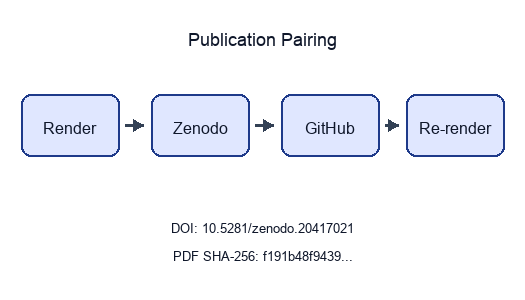
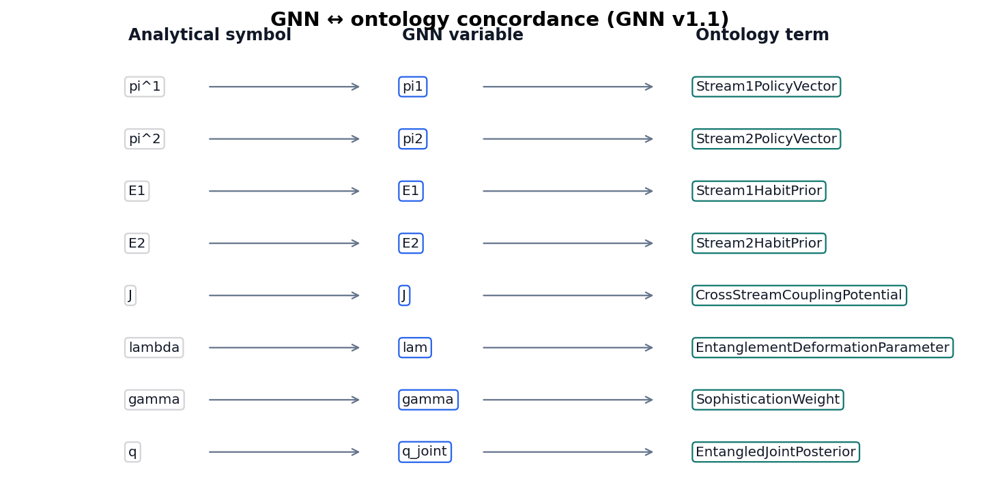
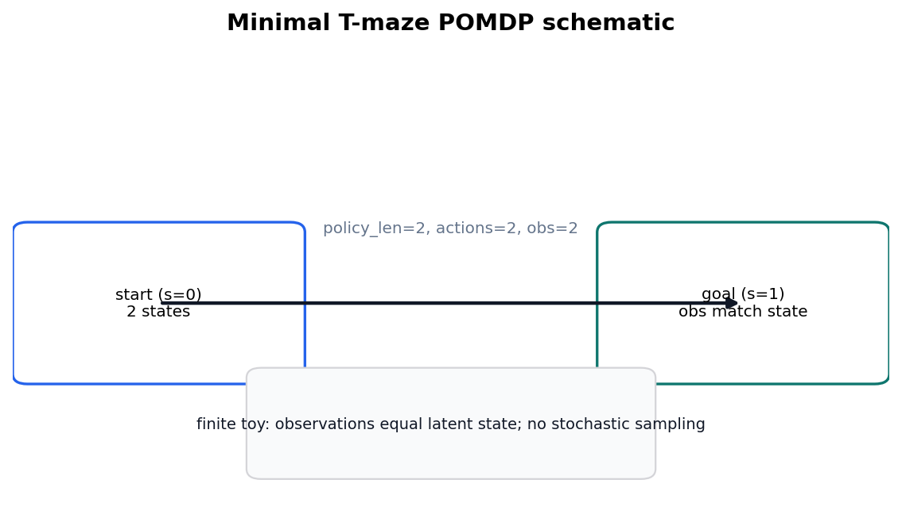
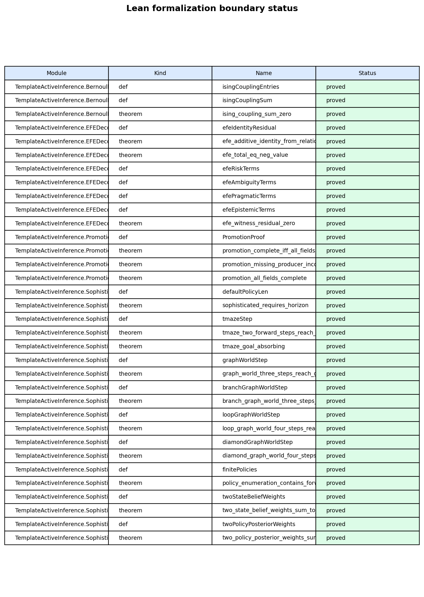
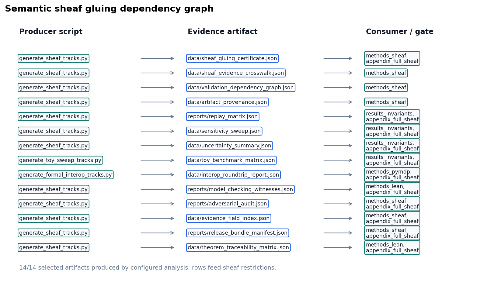

Active Inference Multi-Track Exemplar
Sheaf-Composed Manuscript with pymdp Sophisticated Inference
State: published
Pairing: complete (DOI, GitHub, SHA-256, Zenodo URL)
| Field | Value |
|---|---|
| Title | Active Inference Multi-Track Exemplar |
| Version | 0.3.2 |
| Concept DOI | 10.5281/zenodo.20417021 |
| Version DOI | 10.5281/zenodo.20931870 |
| GitHub | https://github.com/docxology/template_active_inference/releases/tag/v0.3.2 |
| Zenodo | https://zenodo.org/records/20417021 |
| SHA-256 | f191b48f94394cab… |
| SHA-512 | pending |
- Scan Integrity QR and compare the embedded SHA-256 prefix to the table above.
- Scan Zenodo / GitHub QR codes and confirm they resolve to this release pairing.
- Full hashes and structured fields:
../data/transmission_manifest.json.
Structured manifest:
../data/transmission_manifest.json

Stego: off | overlays text | barcodes on | XMP on |
manifest on → ./secure_run.sh
1 Sheaf Track Coverage
This page summarizes which sheaf fragment tracks are
bound for each IMRAD row in manuscript/sheaf/manifest.yaml.
The matrix is regenerated at compose time.
Totals: 95 present / 95 bound / 0 missing (gray).
| Color | Meaning |
|---|---|
| Black | Track present (bound and fragment exists) |
| White | Absent (not bound for this row) |
| Gray | Missing (bound but fragment file absent) |
1.1 Introduction
Introduction (group)
Motivation and scope
Contributions ## Methods
Methods (group)
Bernoulli–Ising analytical model
pymdp simulation harness
Lean formalization boundary
Sheaf composition ## Results
Results (group)
Mutual-information parameter sweep
Free-energy decomposition
T-maze active-inference rollout
Validation invariants ## Discussion
Discussion (group)
Limitations and outlook ## Appendix
Appendix (group)
Appendix: full track coverage

output/data/sheaf_coverage_matrix.json.Appendix row 16_appendix_full_sheaf.md binds 33 fragment
track types as a composability proof (registry defines 34 types;
optional layers is methods-only).
2 Abstract
We study a minimal Active Inference stack on toy models: a Bernoulli–Ising analytical oracle, a pymdp T-maze rollout, and a sheaf-indexed compose contract that binds 34 fragment tracks into 12 flat IMRAD sections. The methodological contribution is a discipline rather than a domain finding: every reported number is hydrated from a generated artifact and every cross-track claim is machine-checked before rendering, so no figure or statistic can drift from the artifact that produced it — 6 sheaf axioms are verified before composition and 25 negative controls keep each failure path live. Claims are limited to those models and their generated artifacts.
sec. 1 reports a 17-row coverage matrix (5 IMRAD group headers) regenerated from the live manifest at compose time. sec. 6 documents the T-maze harness aligned with pymdp sophisticated_inference examples.
sec. 12 records 12 / 12 invariant checks passed. SI planning horizon: 2 steps. Sweep RMSE 0 nats bounds analytical–empirical agreement on the coupling grid.
3 Motivation and scope
3.1 Scientific scope
This manuscript couples three tracks on toy Active Inference models: a Bernoulli–Ising analytical oracle, a pymdp T-maze rollout, and a sheaf-indexed assembly contract that binds 34 optional fragment tracks under an IMRAD outline. The conceptual lineage is the free-energy and active-inference literature (Friston 2010; Buckley et al. 2017; Parr et al. 2022), with critical scope pressure from accounts that separate FEP’s broad organizing role from direct empirical brain claims (Gershman 2019). Here that distinction is operational: the scientific claims stay within these models and their generated artifacts, not biological agents.
3.2 Manuscript structure
Three scientific tracks (analytical, pymdp, sheaf composition) map onto 34 composable fragment types and 31 pipeline gates (fig. 2). sec. 1 summarizes which fragment tracks bind to each manifest row. sec. 8 documents the compose pipeline, coverage semantics (eq. 3), and strict validation gates.
The pymdp track follows the pymdp
sophisticated_inference examples (Heins et al. 2022) with a minimal T-maze
and planning horizon policy_len = 2. Other sections cite
sec. 6 instead of repeating that
reference.
4 Contributions
4.1 Scientific contributions
- Analytical oracle (sec. 5): closed-form mutual information and free-energy decomposition on a symmetric Bernoulli–Ising toy with an independent exact-recomputation cross-check (sec. 9, sec. 10).
- Active-inference harness (sec. 6): deterministic pymdp T-maze rollout —
default
state_inferencebelief filtering, with sophisticated expected-free-energy policy inference selectable viamode: policy_inference— with logged beliefs, actions, and merged invariant gates (sec. 11, sec. 12). - Sheaf-indexed composition (sec. 8): 34 optional fragment types bind to 17 manifest rows under eq. 3, with a 33-track appendix composability proof (sec. 14).
fig. 2 maps the three scientific tracks to 31 pipeline gates and 34 composable fragment renderers. Measured invariant checks: 12 / 12 passed.
Ontology-facing symbols are checked per model: the Bernoulli toy
binds pi1, pi2, J,
gamma, and q_joint, while the SI T-maze binds
location, observation, policy,
and belief_entropy to HiddenState,
ObservationLikelihood,
PolicyPosterior, and BeliefEntropy
(fig. 4, sec. 6).

4.1.1 Ontology bindings
expected_free_energy→ ExpectedFreeEnergylocation→ HiddenStateobservation→ ObservationLikelihoodpolicy→ PolicyPosterior
5 Bernoulli–Ising analytical model
The analytical method is a finite K=2 Bernoulli /
Ising oracle. The entangled joint eq. 1 gives closed-form mutual information
\(I(\lambda)\);
output/data/parameter_sweep.csv then checks the same curve
by an independent exact total-correlation recomputation before the value
is used in sec. 9. GNN and ontology
rows share the same symbol surface (fig. 4), so the derivation, sweep,
and model notation are one audited toy contract rather than parallel
descriptions.
The scope is intentionally small: finite variational quantities only, no sampling, and no empirical generalization. “Free energy” here means exactly computed variational functionals on this tiny discrete state-space, aligned with mathematical FEP reviews (Buckley et al. 2017), not continuous-time or biological FEP dynamics (Gershman 2019). The generated sweep contains 21 grid points, and the merged invariant report records 12 / 12 passing checks.
The entangled joint over binary policies satisfies
\[ q_\lambda(\pi) \propto E(\pi)\,\exp(\lambda J(\pi)), \qquad{(1)}\]
with symmetric Ising coupling \(J\) and deformation parameter \(\lambda\). Let \(\sigma(\lambda)=q_\lambda(\pi_1=\pi_2)\) be the probability that the two streams agree (the diagonal mass of the \(2\times2\) joint); by symmetry both marginals are uniform. With binary entropy \(H_b(p)=-p\log p-(1-p)\log(1-p)\) in nats, the joint entropy is \(H(q_\lambda)=\log 2 + H_b(\sigma(\lambda))\) while each marginal contributes \(\log 2\), so the mutual information is
\[ I(\lambda)=\sum_k H(q_k)-H(q_\lambda)=\log 2 - H_b(\sigma(\lambda)), \]
vanishing at \(\lambda=0\) (\(\sigma=\tfrac12\), independent streams) and
saturating at \(\log 2\) as \(\lambda\to\infty\) (\(\sigma\to1\), perfectly entangled). These
symbols are the rows of analytical_assumption_index.json,
so the derivation is auditable rather than asserted.
The analytical track writes a parameter sweep comparing closed-form mutual information with an independent exact recomputation of it (via total correlation) across \(\lambda \in [0, 4]\) on 21 grid points (sec. 9, fig. 3).
The assumption_index fragment makes the analytical
equations inspectable as a generated artifact instead of relying on
prose labels. output/data/analytical_assumption_index.json
indexes 7 finite-model equation identifiers and 7 rows; the hydrated
pass flag is true.
The index is deliberately narrow. It covers the Bernoulli-Ising toy equations, their finite binary state assumptions, and the generated artifacts that test the same symbols. Any missing equation identifier or empty assumption list fails the toy-sweep validation gate.


The Bernoulli toy is declared in
gnn/bernoulli_toy.gnn.md (GNN v1.1), following the GNN
notation role described by Smekal and Friedman (Smékal
and Friedman 2023). fig. 4 links GNN variables to Active
Inference Ontology terms bound in the analytical ontology fragment;
round-trip parity is checked before render.
Measured MI and sweep artifacts in sec. 9 ground the same symbol map used in the concordance diagram.
5.0.1 Ontology bindings
E1→ Stream1HabitPriorE2→ Stream2HabitPriorJ→ CrossStreamCouplingPotentialgamma→ SophisticationWeightlam→ EntanglementDeformationParameterpi1→ Stream1PolicyVectorpi2→ Stream2PolicyVectorq_joint→ EntangledJointPosterior
6 pymdp simulation harness
Sophisticated inference (planning horizon). The
pymdp method is a deterministic state-inference harness on a minimal
T-maze (fig. 5) with planning horizon
policy_len = 2. The discrete-state framing follows finite
POMDP active-inference treatments and sophisticated-inference analyses
(Da Costa et al.
2020, 2023; Smith et al. 2022; Friston et al.
2021), and the implementation anchor is the pymdp software
paper (Heins et al.
2022). The default state_inference rollout
writes the summary/trace artifacts used in sec. 11; mean belief entropy is 0.3251.
The method keeps runtime, posterior, and extension evidence separate.
output/data/si_policy_comparison.json compares
state_inference and policy_inference over
declared toy horizons and seeds without replacing the default rollout (4
rows; complete-grid flag 1). Agent construction and backend warnings
live in output/reports/pymdp_runtime_diagnostics.json (4
constructions, 4 known third-party warnings, 0 unexpected warnings).
Posterior rows live in
output/data/pymdp_policy_posterior_grid.json and must
remain normalized (1).
Graph-world artifacts are deterministic extension outputs declared in
tracks.yaml rather than new empirical claims.
simulate_si_graph_world.py writes summary and trace
artifacts for the finite graph path; the regenerated summary reports 4
nodes, 4 steps, and goal-reached flag 1. The topology-trace extension
records 4 toy topology traces with agreement flag 1.
Given generative matrices \(A,B,C,D\), pymdp computes state beliefs
\(q(s)\) via variational inference
(infer_states). The Agent is configured with planning
horizon \(H =\) 2, which defines the
policy depth used when constructing candidate policies
(logged as num_policies in the SI summary artifact; see
sec. 11).
The default harness records belief entropy per step; extending to
full expected-free-energy policy selection (infer_policies)
is documented as a follow-on track in sec. 13.
SI artifacts (summary, trace, optional JSONL log) record step count,
actions, observations, and belief entropy for sec. 11. Steps recorded: 2. Branching-time
and variational formulations of active inference planning are treated
here as related planning context (Champion et al.
2021; Nuijten et al. 2026); the live evidence
remains the finite local artifacts si_policy_grid.json,
si_efe_terms.json, and
model_checking_witnesses.json, not a claim about scalable
planning performance.
The interop fragment treats the GNN files, JSON views,
and ontology bindings as a round-trip contract rather than parallel
documentation. output/data/interop_roundtrip_report.json
records 2 deterministic checks; the manuscript only claims losslessness
when true is true.
The stricter lint artifacts are adjacent evidence, not new model
claims: output/data/gnn_roundtrip_report.json,
output/reports/gnn_lint_report.json,
output/data/ontology_alias_index.json, and
output/data/ontology_profile_matrix.json must agree before
the interop row passes. A missing GNN variable, duplicate ontology
alias, dropped JSON field, shape diff, or dtype diff is therefore a
validation failure before rendering.

See gnn/si_tmaze.gnn.md for a GNN view of the T-maze
hidden state, observation, and policy variables with ontology
bindings.
6.0.1 Ontology bindings
belief_entropy→ BeliefEntropyloc→ HiddenStateobs→ ObservationLikelihoodpi→ PolicyPosterior
7 Lean formalization boundary
The Lean method is a boundary witness track, not a broad
formalization of active inference. lake build checks
declarations under lean/TemplateActiveInference/; fig. 6 renders the proved/deferred
surface, while generated inventories carry theorem names,
constructive-token status, and axiom checks.
The theorem set links back to the finite analytical and pymdp toys.
Horizon witnesses constrain the planning-depth examples, and
efe_additive_identity_from_relations proves
(risk + ambiguity) + (pragmatic + epistemic) = 0 from the
definitional relations using core integer arithmetic
(omega). These rows join 17 linked theorem-traceability
entries with all-linked flag true; no prose claim is
promoted unless the generated theorem, witness, and evidence-field rows
agree.

Lean module
TemplateActiveInference.SophisticatedInference declares the
planning-horizon parameter defaultPolicyLen and finite
T-maze boundary witnesses:
sophisticated_requires_horizon : defaultPolicyLen > 1,
tmaze_two_forward_steps_reach_goal, and
tmaze_goal_absorbing. It also contains constructive finite
witnesses for graph-world reachability, finite policy enumeration,
two-state belief weights, and two-policy posterior weights. These
theorems formalize small finite boundaries shared with generated
artifacts; they do not prove that the toy policy posterior is a
general model of sophisticated inference. Axioms are audited with
#print axioms (the gate whitelists only
propext, Classical.choice,
Quot.sound); see the Lean track gate.
Build via lake build under lean/.
The model_checking fragment complements Lean with finite
exhaustive witnesses.
output/reports/model_checking_witnesses.json records 12
toy-state witnesses and reports true only when no
counterexample is found in the enumerated state/action space.
This is deliberately narrower than a semantic proof of all Active
Inference programs. It checks the finite T-maze and graph-world boundary
objects used by this manuscript and exposes the witness inventory to the
same artifact and claim gates as the Lean theorem inventory. The Lean
graph-world inventory witnesses 4 generated toy topology ids, with
all-topologies-witnessed flag true; theorem traceability
contributes 17 linked rows.
The theorem_traceability fragment binds Lean theorem
inventory rows to finite model-checking witnesses, manuscript claims,
and evidence fields.
output/data/theorem_traceability_matrix.json records 17
traceability rows and passes only when every theorem row is linked
(true).
7.0.1 Proof extraction track
The proof_extraction track extracts Lean theorem
statements and proof-source metadata into
output/data/proof_extraction_index.json. The index
currently contains 12 extracted theorem rows, with constructive-token
status true.
8 Sheaf composition
8.1 Compose contract
Each manifest row in manuscript/sheaf/manifest.yaml
binds fragment tracks from manuscript/sheaf/tracks.yaml. A
track supplies a renderer, compose order, label, optional flag, general
paper role, and paper-specific use statement; the composer then flattens
the binding set into one Markdown section for PDF and web output.
The operational claim is auditable binding. Analytical, simulation, pymdp, visualization, Lean, GNN, ontology, scholarship, and optional media fragments attach to IMRAD rows under eq. 3 (P present, — unbound, M missing). This is an applied local-to-global consistency contract in the spirit of cellular sheaf and sheaf-signal-processing work (Curry 2014; Robinson 2014), instantiated here as a finite artifact gate rather than a cohomology claim.
8.2 Coverage and figures
fig. 7 summarizes 34
fragment types and their IMRAD bindings. Generated tables below list
every track definition and section×track binding at compose time. The
visualization track is gated by
output/reports/visualization_quality_audit.json: 23 / 23
registered figures render, 23 are source-mapped, and 23 have sufficient
alt/caption metadata; the all-quality flag is true.
The visualization gate is deliberately row-level. It requires
declared visual/evidence roles (true), artifact-backed
paper claims (true), section bindings (true),
RGB nonblank image renders, hashes, and source-map agreement. The
statistical bridge then expands 7 statistically backed figures into 7
figure-source-scholarship rows with connected status true,
manuscript-reference status true, and visualization-bound
reference status true.
The claim ledger is also checked at row level rather than as prose
metadata. claim_evidence_audit.json resolves 97 claim rows
to live artifacts (true) and replays their typed predicates
(true), yielding the promoted completeness flag
true.
8.3 Compose commands
uv run python scripts/compose_manuscript.py
uv run python scripts/compose_manuscript.py --validate-only --strictEach run emits output/data/sheaf_coverage_matrix.json
and regenerates coverage artifacts. Partial compose
(--section) is draft-only; the matrix always reflects the
full manifest. Coverage totals appear on sec. 1; discussion scope is in sec. 13.
8.4 Law verification
--validate-only --strict runs the structural gate before
any fragment is glued. Beyond per-cell coverage, it invokes the
sheaf-law oracle (verify_sheaf_laws,
src/manuscript/sheaf/laws.py), which checks 6 axioms —
poset, presheaf functoriality, separation, gluing, typing, and
compositionality — and reports 6/6 satisfied for the current manifest. A
violation is raised as an error-level issue and aborts the build, so a
malformed manifest (a section colliding on an output file, an off-chain
block, a mistyped fragment, a fragment shared between sections) can
never compose. The formal statements are in the formalism block below;
the negative-control suite (tests/test_sheaf_laws.py)
proves each check is falsifiable.
The semantic layer is separate from those structural laws.
output/data/sheaf_gluing_certificate.json records
cross-track symbols, typed claim evidence, artifact sources, and
manuscript-variable restrictions; validation fails when the analytical,
pymdp, GNN, ontology, Lean, visualization, or manuscript tracks disagree
about a shared symbol or measured claim. The visualization-quality audit
is one of those restrictions, so a missing source map, missing
statistical bridge source, missing hash, blank render, non-RGB render,
undersized figure, or unbound section breaks the same semantic contract
that checks statistics and theorem witnesses. fig. 8 renders the configured
producers, generated evidence artifacts, and validation consumers that
read each shared symbol.
8.4.1 Base poset and presheaf
The manuscript is modelled as a coverage sheaf over a finite base poset. Let the base \(P\) be the IMRAD blocks ordered as a chain,
\[ \mathsf{Introduction} \prec \mathsf{Methods} \prec \mathsf{Results} \prec \mathsf{Discussion} \prec \mathsf{Appendix}, \qquad{(2)}\]
with, in each block, a group node above its section
nodes (written \(G \sqsupseteq s\)).
\(P\) is therefore a finite poset
(equivalently a finite Alexandrov space). Let \(\mathcal{T}\) be the registered
fragment-track set from manuscript/sheaf/tracks.yaml; each
track \(t \in \mathcal{T}\) carries a
renderer \(R(t)\), label \(L(t)\), optional flag \(O(t)\), a general paper role \(U(t)\), a section-use statement \(V(t)\), and a strict compose-order index
\(\pi(t)\).
The presheaf \(\mathcal{F}\) is a contravariant functor on \(P\) — \(\mathcal{F}\colon P \to \mathbf{Set}\) with restriction maps along \(\sqsupseteq\) — assigning to each composing section \(s\) its bound fragment set \(\mathcal{F}(s) = \{\,(t, F_s(t)) : t \text{ bound in } s\,\}\), where \(F_s : \mathcal{T} \rightharpoonup \mathbf{Path}\) is the section’s partial binding map. Restriction along \(G \sqsupseteq s\) is projection onto a section’s own bindings; group nodes carry the empty assignment and do not compose.
The coverage cell is
\[ B(s,t) \in \{\mathrm{P}, \mathrm{—}, \mathrm{M}\} \qquad{(3)}\]
derived from \(F_s(t)\) and filesystem existence at compose time: P when a bound fragment exists, — when the track is unbound for that row, and M when a bound path is missing. The current regenerated matrix reports 95 present / 95 bound / 0 missing cells. Registry size: \(|\mathcal{T}| = 34\) types across 17 IMRAD manifest rows (5 group rows, 12 composing sections).
8.4.2 Verified sheaf laws
What makes this presheaf a sheaf — rather than a bare
incidence table — is that the composer’s structural axioms are
machine-checked. The oracle verify_sheaf_laws
(src/manuscript/sheaf/laws.py) verifies 6 laws, and the
regenerated build reports 6/6 satisfied:
- Poset. The IMRAD blocks form the chain of eq. 2; compose order is monotone in block rank and every composing section’s block carries a group row.
- Presheaf (functoriality). Every bound track lies in
\(\mathcal{T}\); \(\pi\) is a strict total order; and each
section’s resolved track order is the monotone restriction of \(\pi\) (an explicit
track_orderoverride must be a permutation of the section’s bound tracks). - Separation (locality). The map \(s \mapsto \mathrm{output\_name}(s)\) is injective over composing sections: distinct locals glue to distinct global positions, so the global section is unique.
- Gluing. Compose order is a linear extension of \(P\) — each block’s rows are contiguous and strictly increasing in order — so the local fragments glue to a unique global manuscript in which every composing section appears exactly once.
- Typing. Each binding \((t, F_s(t))\) is well-typed: \(R(t)\) is a registered renderer and the
fragment suffix lies in \(R(t)\)’s
accepted suffix set. Generated renderers (
section_figures,layers_report) synthesize their body and are explicitly type-exempt. - Compositionality. Every fragment file is private to one section (no path is bound twice), so global composition is the coproduct of the per-section bodies and is independent of inclusion order.
Each law is paired with a negative control in
tests/test_sheaf_laws.py — a single mutation that breaks
the law and is proven to be caught — so the gate binds the laws’
content, not merely their shape. Under --strict,
any violation is surfaced as an error-level manifest issue and aborts
composition.
8.4.3 Scope (what is and is not claimed)
These laws verify the sheaf axioms on a finite base poset. They do not compute sheaf cohomology (\(H^0\)/\(H^1\), Čech complexes, derived functors); “sheaf” here names the verified separation-and-gluing structure of a multi-track coverage assignment, not a cohomological invariant. Formal track definitions and section×track bindings appear in the generated tables below.
Semantic gluing then checks agreement of the glued content: coverage counts, manuscript variables, typed claim predicates, pymdp mode/hash, Bernoulli GNN ontology, and SI T-maze GNN ontology. This certificate is a content-level audit over the same base, not an additional topological law.

output/data/sheaf_coverage_matrix.json.


output/data/artifact_contract_index.json.

The provenance fragment makes artifact lineage a live
canonical sheaf track. The configured producer
generate_sheaf_tracks.py writes
output/data/artifact_provenance.json, which hashes 85
required toy artifacts and records producer scripts, source commit,
deterministic seed fields, config digests, and 5 artifact bundles.
Publication claims that depend on generated files must be traceable to
this lineage table or to a narrower artifact-specific certificate.
The provenance claim is intentionally limited: every listed artifact
exists, has a SHA-256 digest or an explicit cycle exclusion, is produced
by a configured analysis script, and carries seed/config provenance
(85 seeded rows; all seeded flag true;
bundle-complete flag true). A changed file, missing
producer, or stale saved digest is a validation failure, not a prose
warning.
The counterexample fragment records expected-failure
fixtures as first-class evidence.
output/reports/counterexample_matrix.json lists 25 negative
controls that intentionally mutate ontology mappings, semantic
certificates, graph-world trace agreement, typed claim evidence, replay
rows, release parity, and provenance hashes.
The matrix is not an empirical result. It is a falsifiability ledger: each row names the gate that must fail and the test that proves the failure path remains live.
The adversarial_audit fragment makes expected failures
part of the sheaf rather than an informal test note.
output/reports/adversarial_audit.json records 25 known-bad
rows and 0 known-bad rows passing; publication proceeds only when every
row is documented as an expected failure and mapped to a gate.
The audit rows target the same failure modes as the semantic
certificate: incomplete sweep cells, unnormalized uncertainty rows,
interop field loss, stale certificate state, and empirical-scope
leakage. The scope boundary remains toy-only:
toy_only_pass.
The evidence_fields fragment indexes the exact artifact
fields that support typed claims and hydrated manuscript tokens.
output/data/evidence_field_index.json records 97 field
rows, and the track passes only when every referenced JSONPath or dotted
field is present (true).
The release_bundle fragment records whether the
canonical deliverables exist before copying and whether copied root
outputs match or are explicitly deferred until the copy stage.
output/reports/release_bundle_manifest.json tracks 38
required deliverables with source-present flag true.
The bundle contract is now indexed artifact-by-artifact rather than
inferred from isolated reports.
output/data/artifact_contract_index.json contains 85
generated artifact rows; each row binds its producer, configured script,
pipeline/sheaf lanes, manuscript consumers, claim predicates,
validators, negative control, freshness status, and copied-output
parity. The aggregate row-complete flag is true, and
copied-root parity completeness is true.
The gate_ergonomics fragment turns validation commands
into evidence rows. output/data/validation_gate_index.json
records 26 gate rows, each naming required inputs and the
negative-control surface that should fail closed.
output/data/track_lane_matrix.json is the cross-track
audit table for the same gate surface: 32 pipeline rows map to sheaf
fragments, producer scripts, primary artifacts, validation gates, and
manuscript consumers, with completion flag true.
8.4.4 Artifact diffoscope track
The artifact_diffoscope track compares saved provenance
hashes against live artifact hashes at the artifact root JSONPath. Its
proof artifact is output/reports/artifact_diffoscope.json:
it currently records 41 comparison rows, with equality status
true.
8.4.5 Artifact license track
The artifact_license track classifies generated and
project-source artifacts under the public project license boundary. Its
audit artifact is
output/reports/artifact_license_audit.json: it currently
records 85 rows, with license-safe status true.
The scholarship fragment turns citations into an audited
method surface rather than decorative bibliography.
output/data/scholarship_source_matrix.json records 21
source rows across 21 method roles and 10 source families, including 3
quantitative/statistical or visualization-quality method roles; fig. 11 renders the resulting
source-to-artifact map with 1 locator kinds. The row set connects
foundational free-energy and active-inference references (Friston 2010; Buckley et al.
2017; Da
Costa et al. 2020; Parr et al. 2022; Smith et al.
2022), planning context (Champion et al.
2021; Nuijten et al. 2026), implementation and
notation anchors (Heins et al. 2022; Smékal and Friedman 2023), and applied
sheaf/local-to-global sources (Curry 2014; Robinson
2014; Bosca
and Ghrist 2026) to the exact artifact or method role they
support.
The validation claim is deliberately narrow: every row must have a
bibliography entry with a DOI or URL, a manuscript citation, registered
sheaf tracks, bound manifest consumer sections, an existing evidence
artifact, and a scope-guarded claim-boundary statement. The saved matrix
is then rederived from live bibliography, manuscript, registry,
manifest, and artifact evidence before validation accepts it
(true), so a forged row-level boolean cannot launder a
disconnected source. The added statistics and visualization rows point
to analysis_statistics.json and
visualization_quality_audit.json, including a
statistical-visualization bridge row, so the scholarship track now
distinguishes method lineage from the generated numerical,
figure-quality, and figure-provenance evidence. The hydrated flags
true, true, and true are
therefore source-traceability and scope-control claims, not claims that
the toy results inherit empirical support from the cited literature.
The newer arXiv rows are intentionally constrained. They situate the toy EFE and planning artifacts against branching-time and variational-planning work, and they situate the finite manuscript sheaf against modern local-to-global computation framing, but none of those citations promotes empirical, neural network, or scalable-agent performance claims for this exemplar.
The security-posture track treats the public exemplar itself as the
defended asset. output/reports/security_posture_audit.json
records 9 controls: 7 enforced local controls and 2 production-security
obligations that are explicitly deferred rather than claimed. The
enforced rows cover public-data boundaries, offline reproducibility,
artifact hashes, copied-output parity, claim/scope traceability, the
Lean boundary, and a source/config secret-pattern scan.
The audit is intentionally not a production certification. It records
0 high-risk local gaps and 0 high-risk secret-pattern findings; the
all-controls flag is true, and all listed evidence is
present: true. Deferred rows cover signed provenance/SBOM
release attestation and zero-trust runtime controls, which require
deployment-specific identity, device posture, logging, and signing
infrastructure outside this toy-only manuscript.
The manuscript_staleness fragment closes the hydration
loop. output/reports/manuscript_staleness_report.json
checks 322 manuscript token bindings against the current generated
variables after resolved markdown is written; the pass flag is
true.
This is a publication-systems claim, not a domain result. A stale hydrated value, unresolved token, or missing resolved section becomes a validation failure before PDF or web outputs are accepted.
8.5 Sheaf fragment track registry
Compose order and renderer bindings from
manuscript/sheaf/tracks.yaml.
| Order | Track id | Label | Renderer | Paper role | Paper use | Optional |
|---|---|---|---|---|---|---|
| 10 | prose |
Narrative prose | markdown |
Narrative framing and argument flow | Supports the narrative spine for each composed paper section. | No |
| 20 | formalism |
Mathematical formalism | markdown |
Mathematical definitions and equations | States the finite equations, laws, and boundary assumptions used by prose claims. | No |
| 30 | simulation |
Analytical simulation notes | markdown |
Deterministic toy analysis evidence | Connects analytical sweeps and toy simulations to results claims. | No |
| 32 | assumption_index |
Analytical assumption index | markdown |
Assumption boundary ledger | Lists finite-model assumptions so analytical claims stay scoped. | No |
| 35 | layers |
Sheaf layers tables | layers_report |
Registry and binding disclosure | Generates the track registry, binding matrix, and evidence crosswalk tables. | Yes |
| 40 | pymdp |
pymdp harness artifacts | markdown |
Active-inference implementation evidence | Binds pymdp traces, runtime diagnostics, and policy comparisons to methods and results. | No |
| 41 | interop |
GNN/ontology/JSON interop checks | markdown |
Cross-format compatibility evidence | Shows that GNN, ontology, and JSON artifacts preserve model meaning. | No |
| 42 | provenance |
Artifact provenance and bundle lineage spine | markdown |
Artifact lineage evidence | Documents producers, hashes, seeds, and bundle lineage for generated claims. | No |
| 45 | replay_matrix |
Deterministic replay matrix | markdown |
Reproducibility replay evidence | Shows configured producers replay and match their expected artifacts. | No |
| 48 | counterexample |
Expected-failure counterexamples | markdown |
Falsifiability negative controls | Records known-bad fixtures that must fail validation gates. | No |
| 50 | adversarial_audit |
Adversarial audit matrix | markdown |
Adversarial robustness evidence | Documents stress cases and expected failures for sheaf-track claims. | No |
| 52 | evidence_fields |
Evidence field index | markdown |
Claim field traceability | Maps evidence fields to sections and artifacts for claim hydration. | No |
| 53 | release_bundle |
Release bundle parity manifest | markdown |
Release artifact parity evidence | Checks that required deliverables exist and copied outputs match or defer explicitly. | No |
| 54 | gate_ergonomics |
Validation gate ergonomics | markdown |
Validation workflow index | Explains the gates a reader or maintainer can rerun locally. | No |
| 55 | artifact_diffoscope |
Artifact diffoscope | markdown |
Artifact equality evidence | Compares generated and copied artifacts to surface publication drift. | No |
| 56 | artifact_license |
Artifact license audit | markdown |
License safety evidence | Records license status for artifacts included in release surfaces. | No |
| 57 | scholarship |
Source-backed scholarship matrix | markdown |
Scholarship and method-source lineage | Connects cited sources to method roles, sections, and generated evidence. | No |
| 58 | security_posture |
Security posture audit | markdown |
Public release security boundary evidence | Separates enforced local controls from deferred production-security obligations. | No |
| 60 | sensitivity |
Toy sensitivity sweep | markdown |
Parameter sensitivity evidence | Summarizes deterministic toy perturbations behind robustness claims. | No |
| 62 | uncertainty |
Toy uncertainty summaries | markdown |
Uncertainty summary evidence | Reports normalized uncertainty bins and summaries for finite toy analyses. | No |
| 65 | benchmark |
Compact toy benchmark matrix | markdown |
Toy benchmark comparison evidence | Shows compact model comparisons used to bound toy-only claims. | No |
| 66 | manuscript_staleness |
Hydrated manuscript staleness report | markdown |
Manuscript freshness evidence | Checks hydrated sections against current generated artifacts and variables. | No |
| 67 | visualization |
Figure references | section_figures |
Figure evidence and communication | Injects registry figures into section-specific evidence blocks. | No |
| 70 | lean |
Lean boundary fragment | markdown |
Formal proof boundary evidence | Separates proved Lean witnesses from intentionally scoped formal boundaries. | No |
| 75 | model_checking |
Finite-state model checking witnesses | markdown |
Exhaustive finite-model evidence | Lists model-checking witnesses for finite state-space claims. | No |
| 76 | theorem_traceability |
Lean theorem traceability matrix | markdown |
Theorem dependency traceability | Links theorem rows to proof dependencies and finite model witnesses. | No |
| 77 | proof_extraction |
Lean proof extraction index | markdown |
Constructive proof extraction evidence | Shows extracted theorem artifacts remain constructive and available. | No |
| 78 | state_space_catalog |
Finite state-space catalog | markdown |
Finite model catalog evidence | Enumerates reachable states so toy models remain explicitly finite. | No |
| 79 | causal_ablation |
Deterministic causal ablation matrix | markdown |
Causal ablation evidence | Summarizes deterministic perturbation effects across toy topologies. | No |
| 80 | gnn |
GNN notation fragment | markdown |
GNN notation evidence | Documents notation and round-trip status for the analytical model. | No |
| 90 | ontology |
Active Inference Ontology bindings | ontology_yaml |
Ontology binding evidence | Maps local variables to ontology terms for semantic consistency. | No |
| 100 | animation |
Animation fragment | markdown |
Dynamic trace visualization | Provides a deterministic GIF trace as optional appendix evidence. | Yes |
| 102 | animation_delta |
Animation frame-delta manifest | markdown |
Animation integrity evidence | Confirms animation frames change and support the visual trace. | No |
| 110 | release_notes |
Release notes evidence | markdown |
Release narrative evidence | Binds release-note statements to source-backed artifacts. | No |
Track count: 34 registered fragment types.
8.6 IMRAD binding matrix
Section rows versus fragment track columns. P = present (bound and file exists); — = absent (not bound); M = missing (bound, file absent).
| Section | prose | formalism | simulation | assumption_index | layers | pymdp | interop | provenance | replay_matrix | counterexample | adversarial_audit | evidence_fields | release_bundle | gate_ergonomics | artifact_diffoscope | artifact_license | scholarship | security_posture | sensitivity | uncertainty | benchmark | manuscript_staleness | visualization | lean | model_checking | theorem_traceability | proof_extraction | state_space_catalog | causal_ablation | gnn | ontology | animation | animation_delta | release_notes |
|---|---|---|---|---|---|---|---|---|---|---|---|---|---|---|---|---|---|---|---|---|---|---|---|---|---|---|---|---|---|---|---|---|---|---|
| Introduction (group) | — | — | — | — | — | — | — | — | — | — | — | — | — | — | — | — | — | — | — | — | — | — | — | — | — | — | — | — | — | — | — | — | — | — |
| Motivation and scope | P | — | — | — | — | — | — | — | — | — | — | — | — | — | — | — | — | — | — | — | — | — | — | — | — | — | — | — | — | — | — | — | — | — |
| Contributions | P | — | — | — | — | — | — | — | — | — | — | — | — | — | — | — | — | — | — | — | — | — | P | — | — | — | — | — | — | — | P | — | — | — |
| Methods (group) | — | — | — | — | — | — | — | — | — | — | — | — | — | — | — | — | — | — | — | — | — | — | — | — | — | — | — | — | — | — | — | — | — | — |
| Bernoulli–Ising analytical model | P | P | P | P | — | — | — | — | — | — | — | — | — | — | — | — | — | — | — | — | — | — | P | — | — | — | — | — | — | P | P | — | — | — |
| pymdp simulation harness | P | P | — | — | — | P | P | — | — | — | — | — | — | — | — | — | — | — | — | — | — | — | P | — | — | — | — | — | — | P | P | — | — | — |
| Lean formalization boundary | P | — | — | — | — | — | — | — | — | — | — | — | — | — | — | — | — | — | — | — | — | — | P | P | P | P | P | — | — | — | — | — | — | — |
| Sheaf composition | P | P | — | — | P | — | — | P | — | P | P | P | P | P | P | P | P | P | — | — | — | P | P | — | — | — | — | — | — | — | — | — | — | — |
| Results (group) | — | — | — | — | — | — | — | — | — | — | — | — | — | — | — | — | — | — | — | — | — | — | — | — | — | — | — | — | — | — | — | — | — | — |
| Mutual-information parameter sweep | P | P | P | — | — | — | — | — | — | — | — | — | — | — | — | — | — | — | — | — | — | — | P | — | — | — | — | — | — | — | — | — | — | — |
| Free-energy decomposition | P | — | — | — | — | — | — | — | — | — | — | — | — | — | — | — | — | — | — | — | — | — | P | — | — | — | — | — | — | — | — | — | — | — |
| T-maze active-inference rollout | P | — | — | — | — | P | — | — | — | — | — | — | — | — | — | — | — | — | — | — | — | — | P | — | — | — | — | — | — | — | — | — | — | — |
| Validation invariants | P | — | P | — | — | — | — | — | P | — | — | — | — | — | — | — | — | — | P | P | P | — | P | — | — | — | — | P | P | — | — | — | — | — |
| Discussion (group) | — | — | — | — | — | — | — | — | — | — | — | — | — | — | — | — | — | — | — | — | — | — | — | — | — | — | — | — | — | — | — | — | — | — |
| Limitations and outlook | P | — | P | — | — | — | — | — | — | — | — | — | — | — | — | — | P | — | — | — | — | — | — | — | — | — | — | — | — | — | P | — | — | P |
| Appendix (group) | — | — | — | — | — | — | — | — | — | — | — | — | — | — | — | — | — | — | — | — | — | — | — | — | — | — | — | — | — | — | — | — | — | — |
| Appendix: full track coverage | P | P | P | P | — | P | P | P | P | P | P | P | P | P | P | P | P | P | P | P | P | P | P | P | P | P | P | P | P | P | P | P | P | P |
Totals: 95 present / 95 bound / 0 missing.
| Symbol | Coverage color | Meaning |
|---|---|---|
| P | Black | Track present (bound and fragment exists) |
| — | White | Absent (not bound for this section) |
| M | Gray | Missing (bound but fragment file absent) |
8.7 Section-track status
Generated status for the current manuscript sheaf, summarized per composable section.
| Section | IMRAD | Bound | Present | Missing | Status |
|---|---|---|---|---|---|
| Motivation and scope | introduction | 1 | 1 | 0 | fully_sheafed |
| Contributions | introduction | 3 | 3 | 0 | fully_sheafed |
| Bernoulli–Ising analytical model | methods | 7 | 7 | 0 | fully_sheafed |
| pymdp simulation harness | methods | 7 | 7 | 0 | fully_sheafed |
| Lean formalization boundary | methods | 6 | 6 | 0 | fully_sheafed |
| Sheaf composition | methods | 15 | 15 | 0 | fully_sheafed |
| Mutual-information parameter sweep | results | 4 | 4 | 0 | fully_sheafed |
| Free-energy decomposition | results | 2 | 2 | 0 | fully_sheafed |
| T-maze active-inference rollout | results | 3 | 3 | 0 | fully_sheafed |
| Validation invariants | results | 9 | 9 | 0 | fully_sheafed |
| Limitations and outlook | discussion | 5 | 5 | 0 | fully_sheafed |
| Appendix: full track coverage | appendix | 33 | 33 | 0 | fully_sheafed |
Section status: 12 / 12 composable sections fully sheafed; 0 required bound fragments missing.
8.8 Track status
| Track | Renderer | Bound sections | Present | Missing | Claims | Status |
|---|---|---|---|---|---|---|
prose |
markdown |
12 | 12 | 0 | 0 | complete |
formalism |
markdown |
5 | 5 | 0 | 0 | complete |
simulation |
markdown |
5 | 5 | 0 | 11 | complete |
assumption_index |
markdown |
2 | 2 | 0 | 1 | complete |
layers |
layers_report |
1 | 1 | 0 | 1 | complete |
pymdp |
markdown |
3 | 3 | 0 | 15 | complete |
interop |
markdown |
2 | 2 | 0 | 3 | complete |
provenance |
markdown |
2 | 2 | 0 | 15 | complete |
replay_matrix |
markdown |
2 | 2 | 0 | 3 | complete |
counterexample |
markdown |
2 | 2 | 0 | 2 | complete |
adversarial_audit |
markdown |
2 | 2 | 0 | 9 | complete |
evidence_fields |
markdown |
2 | 2 | 0 | 1 | complete |
release_bundle |
markdown |
2 | 2 | 0 | 9 | complete |
gate_ergonomics |
markdown |
2 | 2 | 0 | 8 | complete |
artifact_diffoscope |
markdown |
2 | 2 | 0 | 2 | complete |
artifact_license |
markdown |
2 | 2 | 0 | 1 | complete |
scholarship |
markdown |
3 | 3 | 0 | 4 | complete |
security_posture |
markdown |
2 | 2 | 0 | 2 | complete |
sensitivity |
markdown |
2 | 2 | 0 | 9 | complete |
uncertainty |
markdown |
2 | 2 | 0 | 4 | complete |
benchmark |
markdown |
2 | 2 | 0 | 3 | complete |
manuscript_staleness |
markdown |
2 | 2 | 0 | 1 | complete |
visualization |
section_figures |
10 | 10 | 0 | 17 | complete |
lean |
markdown |
2 | 2 | 0 | 9 | complete |
model_checking |
markdown |
2 | 2 | 0 | 7 | complete |
theorem_traceability |
markdown |
2 | 2 | 0 | 3 | complete |
proof_extraction |
markdown |
2 | 2 | 0 | 2 | complete |
state_space_catalog |
markdown |
2 | 2 | 0 | 2 | complete |
causal_ablation |
markdown |
2 | 2 | 0 | 2 | complete |
gnn |
markdown |
3 | 3 | 0 | 4 | complete |
ontology |
ontology_yaml |
5 | 5 | 0 | 5 | complete |
animation |
markdown |
1 | 1 | 0 | 2 | complete |
animation_delta |
markdown |
1 | 1 | 0 | 1 | complete |
release_notes |
markdown |
2 | 2 | 0 | 2 | complete |
Status cells: 578 section-track cells.
8.9 Render and logging summary
| Event | Component | Output | Status | Detail |
|---|---|---|---|---|
registry_loaded |
sheaf.registry |
registered_tracks |
ok |
34 tracks |
manifest_loaded |
sheaf.manifest |
manifest_sections |
ok |
17 sections |
coverage_matrix_built |
sheaf.coverage |
output/data/sheaf_coverage_matrix.json |
ok |
95 present cells |
section_status_matrix_built |
sheaf.status |
output/data/sheaf_section_status_matrix.json |
ok |
578 section-track cells |
layers_renderer_bound |
sheaf.layers_report |
manuscript/08_methods_sheaf.md |
ok |
methods sheaf layer tables |
semantic_artifacts_indexed |
sheaf.semantic |
output/data/validation_dependency_graph.json |
ok |
85 artifact producer rows |
validation_gates_indexed |
gates |
output/data/validation_gate_index.json |
ok |
3 gate groups |
manuscript_sections_composed |
sheaf.compose |
manuscript/*.md |
ok |
16 composed markdown files |
Render events: 8.
8.10 Evidence crosswalk
| Claim | Artifact | Producer | Gates |
|---|---|---|---|
sheaf_registry |
manuscript/sheaf/tracks.yaml |
manual |
validate_outputs |
sheaf_manifest |
manuscript/sheaf/manifest.yaml |
manual |
validate_outputs |
sheaf_coverage_config |
manuscript/sheaf/coverage.yaml |
manual |
validate_outputs |
sheaf_coverage_matrix |
output/data/sheaf_coverage_matrix.json |
generate_figures.py |
validate_outputs, validate_manuscript |
sheaf_gluing_certificate |
output/data/sheaf_gluing_certificate.json |
generate_sheaf_tracks.py |
validate_manuscript, validate_outputs |
sheaf_evidence_crosswalk |
output/data/sheaf_evidence_crosswalk.json |
generate_sheaf_tracks.py |
validate_manuscript, validate_outputs |
validation_dependency_graph |
output/data/validation_dependency_graph.json |
generate_sheaf_tracks.py |
validate_manuscript, validate_outputs |
semantic_gluing_graph_figure |
../figures/semantic_gluing_graph.png |
generate_figures.py |
validate_outputs, figure_registry |
Claim rows: 97 typed evidence claims.
8.11 Artifact producer graph
| Artifact | Producer | Configured | Consumers |
|---|---|---|---|
output/data/analysis_statistics.json |
compute_statistics.py |
Yes | results_si_tmaze, results_invariants |
output/data/analytical_assumption_index.json |
generate_toy_sweep_tracks.py |
Yes | methods_analytical, appendix_full_sheaf |
output/data/analytical_observable_sweep.json |
generate_toy_sweep_tracks.py |
Yes | results_invariants, appendix_full_sheaf |
output/data/animation_frame_deltas.json |
render_animation.py |
Yes | appendix_full_sheaf |
output/data/artifact_contract_index.json |
generate_sheaf_tracks.py |
Yes | methods_sheaf, appendix_full_sheaf |
output/data/artifact_provenance.json |
generate_sheaf_tracks.py |
Yes | methods_sheaf |
output/data/causal_ablation_matrix.json |
generate_toy_sweep_tracks.py |
Yes | results_invariants, appendix_full_sheaf |
output/data/cross_track_symbol_table.json |
generate_integration_audit.py |
Yes | methods_sheaf, appendix_full_sheaf |
output/data/evidence_field_index.json |
generate_sheaf_tracks.py |
Yes | methods_sheaf, appendix_full_sheaf |
output/data/figure_source_map.json |
generate_integration_audit.py |
Yes | methods_sheaf, appendix_full_sheaf |
output/data/gnn_roundtrip_report.json |
generate_formal_interop_tracks.py |
Yes | methods_pymdp, appendix_full_sheaf |
output/data/interop_roundtrip_report.json |
generate_formal_interop_tracks.py |
Yes | methods_pymdp, appendix_full_sheaf |
output/data/manuscript_evidence_tables.json |
generate_integration_audit.py |
Yes | methods_sheaf, appendix_full_sheaf |
output/data/manuscript_token_provenance.json |
generate_integration_audit.py |
Yes | methods_sheaf, appendix_full_sheaf |
output/data/manuscript_variables.json |
z_generate_manuscript_variables.py |
Yes | methods_sheaf, appendix_full_sheaf |
output/data/ontology_alias_index.json |
generate_formal_interop_tracks.py |
Yes | methods_pymdp, appendix_full_sheaf |
output/data/ontology_profile_matrix.json |
generate_formal_interop_tracks.py |
Yes | methods_pymdp, appendix_full_sheaf |
output/data/parameter_sweep.csv |
run_analytical_sweep.py |
Yes | methods_analytical, results_mi_sweep |
output/data/proof_dependency_graph.json |
generate_sheaf_tracks.py |
Yes | methods_lean, appendix_full_sheaf |
output/data/proof_extraction_index.json |
generate_formal_interop_tracks.py |
Yes | methods_lean, appendix_full_sheaf |
output/data/pymdp_policy_posterior_grid.json |
simulate_si_tmaze.py |
Yes | methods_pymdp, appendix_full_sheaf |
output/data/scholarship_source_matrix.json |
generate_sheaf_tracks.py |
Yes | methods_sheaf, appendix_full_sheaf |
output/data/sensitivity_sweep.json |
generate_sheaf_tracks.py |
Yes | results_invariants, appendix_full_sheaf |
output/data/sheaf_coverage_matrix.json |
generate_figures.py |
Yes | methods_sheaf, appendix_full_sheaf |
output/data/sheaf_evidence_crosswalk.json |
generate_sheaf_tracks.py |
Yes | methods_sheaf |
output/data/sheaf_gluing_certificate.json |
generate_sheaf_tracks.py |
Yes | methods_sheaf, appendix_full_sheaf |
output/data/sheaf_section_status_matrix.json |
generate_sheaf_tracks.py |
Yes | methods_sheaf, appendix_full_sheaf |
output/data/si_efe_terms.json |
generate_toy_sweep_tracks.py |
Yes | results_invariants, appendix_full_sheaf |
output/data/si_graph_world_summary.json |
simulate_si_graph_world.py |
Yes | methods_pymdp, results_si_tmaze |
output/data/si_graph_world_topology_sweep.json |
generate_toy_sweep_tracks.py |
Yes | results_invariants, appendix_full_sheaf |
output/data/si_graph_world_topology_traces.json |
generate_toy_sweep_tracks.py |
Yes | results_invariants, appendix_full_sheaf |
output/data/si_graph_world_trace.json |
simulate_si_graph_world.py |
Yes | methods_pymdp, results_si_tmaze, appendix_full_sheaf |
output/data/si_policy_comparison.json |
simulate_si_tmaze.py |
Yes | methods_pymdp, results_si_tmaze |
output/data/si_policy_grid.json |
generate_toy_sweep_tracks.py |
Yes | results_invariants, appendix_full_sheaf |
output/data/si_tmaze_summary.json |
simulate_si_tmaze.py |
Yes | methods_pymdp, results_si_tmaze |
output/data/si_tmaze_trace.json |
simulate_si_tmaze.py |
Yes | methods_pymdp, results_si_tmaze |
output/data/state_space_catalog.json |
generate_toy_sweep_tracks.py |
Yes | results_invariants, appendix_full_sheaf |
output/data/state_transition_table.json |
generate_sheaf_tracks.py |
Yes | results_invariants, appendix_full_sheaf |
output/data/statistical_visualization_bridge.json |
generate_integration_audit.py |
Yes | methods_sheaf, appendix_full_sheaf |
output/data/theorem_traceability_matrix.json |
generate_sheaf_tracks.py |
Yes | methods_lean, appendix_full_sheaf |
output/data/toy_benchmark_matrix.json |
generate_toy_sweep_tracks.py |
Yes | results_invariants, appendix_full_sheaf |
output/data/track_improvement_scope.json |
generate_sheaf_tracks.py |
Yes | methods_sheaf, appendix_full_sheaf |
output/data/track_lane_matrix.json |
generate_sheaf_tracks.py |
Yes | methods_sheaf, appendix_full_sheaf |
output/data/uncertainty_summary.json |
generate_sheaf_tracks.py |
Yes | results_invariants, appendix_full_sheaf |
output/data/validation_dependency_graph.json |
generate_sheaf_tracks.py |
Yes | methods_sheaf |
output/data/validation_gate_index.json |
generate_integration_audit.py |
Yes | methods_sheaf, appendix_full_sheaf |
../figures/si_belief_trajectory.gif |
render_animation.py |
Yes | appendix_full_sheaf |
output/reports/ablation_sensitivity_report.json |
generate_sheaf_tracks.py |
Yes | results_invariants, appendix_full_sheaf |
output/reports/adversarial_audit.json |
generate_sheaf_tracks.py |
Yes | methods_sheaf, appendix_full_sheaf |
output/reports/artifact_diffoscope.json |
generate_integration_audit.py |
Yes | methods_sheaf, appendix_full_sheaf |
output/reports/artifact_license_audit.json |
generate_integration_audit.py |
Yes | methods_sheaf, appendix_full_sheaf |
output/reports/blocked_scope_manifest.json |
generate_sheaf_tracks.py |
Yes | methods_sheaf, discussion_outlook, appendix_full_sheaf |
output/reports/claim_evidence_audit.json |
generate_integration_audit.py |
Yes | methods_sheaf, appendix_full_sheaf |
output/reports/counterexample_matrix.json |
generate_sheaf_tracks.py |
Yes | methods_sheaf |
output/reports/figure_hash_manifest.json |
generate_integration_audit.py |
Yes | methods_sheaf, appendix_full_sheaf |
output/reports/gnn_lint_report.json |
generate_formal_interop_tracks.py |
Yes | methods_pymdp, appendix_full_sheaf |
output/reports/graph_world_invariants.json |
generate_toy_sweep_tracks.py |
Yes | results_invariants, appendix_full_sheaf |
output/reports/invariants.json |
run_analytical_sweep.py |
Yes | results_invariants |
output/reports/lean_graph_world_inventory.json |
generate_formal_interop_tracks.py |
Yes | methods_lean, appendix_full_sheaf |
output/reports/lean_theorem_inventory.json |
generate_formal_interop_tracks.py |
Yes | methods_lean, appendix_full_sheaf |
output/reports/manuscript_staleness_report.json |
z_generate_manuscript_variables.py |
Yes | methods_sheaf, appendix_full_sheaf |
output/reports/model_checking_witnesses.json |
generate_sheaf_tracks.py |
Yes | methods_lean, appendix_full_sheaf |
output/reports/producer_completeness.json |
generate_integration_audit.py |
Yes | methods_sheaf, appendix_full_sheaf |
output/reports/pymdp_runtime_diagnostics.json |
simulate_si_tmaze.py |
Yes | methods_pymdp, appendix_full_sheaf |
output/reports/release_attestation.json |
generate_sheaf_tracks.py |
Yes | discussion_outlook, appendix_full_sheaf |
output/reports/release_bundle_manifest.json |
generate_sheaf_tracks.py |
Yes | methods_sheaf, appendix_full_sheaf |
output/reports/release_notes_evidence.json |
generate_integration_audit.py |
Yes | discussion_outlook, appendix_full_sheaf |
output/reports/replay_matrix.json |
generate_sheaf_tracks.py |
Yes | results_invariants, appendix_full_sheaf |
output/reports/reproducibility_replay.json |
generate_validation_spine.py |
Yes | results_invariants |
output/reports/scope_boundary_audit.json |
generate_integration_audit.py |
Yes | methods_sheaf, appendix_full_sheaf |
output/reports/security_posture_audit.json |
generate_sheaf_tracks.py |
Yes | methods_sheaf, appendix_full_sheaf |
output/reports/sheaf_render_log.json |
generate_sheaf_tracks.py |
Yes | methods_sheaf, appendix_full_sheaf |
output/reports/si_invariants.json |
simulate_si_tmaze.py |
Yes | results_si_tmaze |
output/reports/si_tmaze_run_report.json |
simulate_si_tmaze.py |
Yes | results_si_tmaze |
output/reports/stale_artifact_report.json |
generate_integration_audit.py |
Yes | methods_sheaf, appendix_full_sheaf |
output/reports/visualization_quality_audit.json |
generate_integration_audit.py |
Yes | methods_sheaf, appendix_full_sheaf |
Producer issues: 0.
8.12 Semantic gluing restrictions
| Restriction | Value |
|---|---|
| Coverage missing | 0 |
| Policy comparison rows | 4 |
| Policy grid complete | True |
| Policy posterior rows | 10 |
| Policy posterior normalized | True |
| Runtime unexpected warnings | 0 |
| Graph-world trace agrees | True |
| Animation frames | 4 |
| Lean all proved | True |
| GNN ontology ok | True |
| Configured producers ok | True |
| Semantic certificate ok | None |
| Dependency edges ok | True |
| Track scope complete | True |
| Empirical adapter blocked | True |
| Provenance bundles complete | True |
| Replay rows matched | True |
| Sensitivity complete | True |
| Uncertainty normalized | True |
| Evidence fields mapped | True |
| Release bundle sources present | True |
| Theorem traceability linked | True |
| Gate ergonomics indexed | True |
| Interop lossless | True |
| Scope toy-only | True |
8.13 Track-lane matrix
| Pipeline track | Sheaf fragments | Producer | Primary artifact | Claims | Semantic | Gates | Negative |
|---|---|---|---|---|---|---|---|
lean |
lean |
generate_formal_interop_tracks.py |
output/reports/lean_theorem_inventory.json |
lean_graph_world_policy_boundary,
lean_graph_world_topologies_witnessed,
lean_theorem_inventory_proved,
model_checking_exhaustive,
model_checking_witnesses_pass,
proof_dependency_graph_resolved,
proof_extraction_constructive,
theorem_traceability_linked,
track_lane_promotion_map_figure |
track_lane_matrix_complete,
track_lane_matrix_row_count |
build_lean, validate_outputs |
track_lane_matrix_row_only_forgery |
analytical |
formalism, simulation,
assumption_index |
run_analytical_sweep.py |
output/data/parameter_sweep.csv |
analytical_assumption_index,
composed_methods_analytical,
composed_results_mi |
track_lane_matrix_complete,
track_lane_matrix_row_count |
validate_outputs |
track_lane_matrix_row_only_forgery |
pymdp |
pymdp |
simulate_si_tmaze.py |
output/data/si_policy_comparison.json |
graph_world_invariants_pass,
graph_world_topology_traces_consistent,
pymdp_policy_posterior_grid_normalized,
pymdp_runtime_diagnostics_ok,
sheaf_gluing_certificate,
si_belief_entropy_figure,
si_efe_rows_explained, si_graph_world_summary,
si_graph_world_trace,
si_graph_world_trace_consistency,
si_policy_comparison,
si_policy_comparison_modes,
si_policy_grid_complete, si_tmaze_summary,
si_tmaze_trace |
track_lane_matrix_complete,
track_lane_matrix_row_count |
validate_outputs |
track_lane_matrix_row_only_forgery |
gnn |
gnn |
generate_formal_interop_tracks.py |
output/reports/gnn_lint_report.json |
cross_track_symbols_consistent,
interop_lossless, interop_roundtrip_lossless,
sheaf_gluing_certificate |
track_lane_matrix_complete,
track_lane_matrix_row_count |
validate_outputs |
track_lane_matrix_row_only_forgery |
ontology |
ontology |
generate_formal_interop_tracks.py |
output/data/ontology_profile_matrix.json |
composed_discussion,
cross_track_symbols_consistent,
interop_lossless, interop_roundtrip_lossless,
sheaf_gluing_certificate |
track_lane_matrix_complete,
track_lane_matrix_row_count |
validate_manuscript, validate_outputs |
track_lane_matrix_row_only_forgery |
visualizations |
visualization |
generate_integration_audit.py |
output/reports/visualization_quality_audit.json |
visualization_quality_audit_complete,
visualization_statistics_bridge_complete |
track_lane_matrix_complete,
track_lane_matrix_row_count |
validate_manuscript, validate_outputs |
track_lane_matrix_row_only_forgery |
provenance |
provenance |
generate_sheaf_tracks.py |
output/data/artifact_provenance.json |
artifact_contract_index_complete,
artifact_contract_map_figure,
artifact_diffoscope_equal,
artifact_license_safe,
artifact_provenance_seed_config,
artifact_provenance_spine,
dependency_graph_edges,
figure_hash_manifest_complete,
figure_source_map_complete,
producer_completeness,
pymdp_runtime_diagnostics_ok,
release_bundle_sources_present,
stale_artifact_report_fresh,
track_improvement_scope_complete,
track_lane_matrix_complete |
track_lane_matrix_complete,
track_lane_matrix_row_count |
validate_manuscript, validate_outputs |
missing_sheaf_track_producer |
replay_matrix |
replay_matrix |
generate_sheaf_tracks.py |
output/reports/replay_matrix.json |
replay_matrix_all_replayed,
replay_matrix_spine,
stale_artifact_report_fresh |
track_lane_matrix_complete,
track_lane_matrix_row_count |
validate_manuscript, validate_outputs |
replay_mismatch |
counterexample |
counterexample |
generate_sheaf_tracks.py |
output/reports/counterexample_matrix.json |
counterexample_expected_failures,
counterexample_matrix_spine |
track_lane_matrix_complete,
track_lane_matrix_row_count |
validate_manuscript, validate_outputs |
known_bad_counterexample_passed |
sensitivity |
sensitivity |
generate_sheaf_tracks.py |
output/data/sensitivity_sweep.json |
ablation_sensitivity_source_backed,
causal_ablation_complete,
graph_world_invariants_pass,
graph_world_topology_traces_consistent,
lean_graph_world_topologies_witnessed,
sensitivity_complete_grid,
si_efe_rows_explained,
si_policy_grid_complete,
state_transition_table_complete |
track_lane_matrix_complete,
track_lane_matrix_row_count |
validate_outputs |
missing_sensitivity_cell |
assumption_index |
assumption_index |
generate_toy_sweep_tracks.py |
output/data/analytical_assumption_index.json |
analytical_assumption_index |
track_lane_matrix_complete,
track_lane_matrix_row_count |
validate_manuscript, validate_outputs |
track_lane_matrix_row_only_forgery |
uncertainty |
uncertainty |
generate_sheaf_tracks.py |
output/data/uncertainty_summary.json |
ablation_sensitivity_source_backed,
pymdp_policy_posterior_grid_normalized,
uncertainty_normalized,
uncertainty_rows_normalized |
track_lane_matrix_complete,
track_lane_matrix_row_count |
validate_outputs |
unnormalized_uncertainty_row |
benchmark |
benchmark |
generate_toy_sweep_tracks.py |
output/data/toy_benchmark_matrix.json |
benchmark_rows_complete,
causal_ablation_complete,
state_space_catalog_finite |
track_lane_matrix_complete,
track_lane_matrix_row_count |
validate_outputs |
track_lane_matrix_row_only_forgery |
model_checking |
model_checking |
generate_sheaf_tracks.py |
output/reports/model_checking_witnesses.json |
lean_graph_world_topologies_witnessed,
lean_theorem_inventory_proved,
model_checking_exhaustive,
model_checking_witnesses_pass,
state_space_catalog_finite,
state_transition_table_complete,
theorem_traceability_linked |
track_lane_matrix_complete,
track_lane_matrix_row_count |
validate_outputs |
missed_model_checking_counterexample |
interop |
interop |
generate_formal_interop_tracks.py |
output/data/interop_roundtrip_report.json |
interop_lossless,
interop_roundtrip_lossless,
pymdp_policy_posterior_grid_normalized |
track_lane_matrix_complete,
track_lane_matrix_row_count |
validate_outputs |
interop_shape_loss |
adversarial_audit |
adversarial_audit |
generate_sheaf_tracks.py |
output/reports/adversarial_audit.json |
adversarial_audit_expected_failures,
adversarial_audit_known_bad_blocked,
claim_evidence_audit_typed,
counterexample_expected_failures,
empirical_adapter_blocked,
producer_completeness,
pymdp_runtime_diagnostics_ok,
scope_boundary_toy_only,
semantic_gluing_ok |
track_lane_matrix_complete,
track_lane_matrix_row_count |
validate_manuscript, validate_outputs |
adversarial_known_bad_passes |
evidence_fields |
evidence_fields |
generate_sheaf_tracks.py |
output/data/evidence_field_index.json |
evidence_fields_mapped |
track_lane_matrix_complete,
track_lane_matrix_row_count |
validate_manuscript, validate_outputs |
missing_typed_claim |
release_bundle |
release_bundle |
generate_sheaf_tracks.py |
output/reports/release_bundle_manifest.json |
artifact_contract_copied_parity_complete,
artifact_contract_index_complete,
artifact_contract_map_figure,
artifact_diffoscope_equal,
artifact_license_safe,
release_attestation_complete,
release_bundle_sources_present,
release_notes_source_backed,
security_posture_controls_ok |
track_lane_matrix_complete,
track_lane_matrix_row_count |
validate_manuscript, validate_outputs |
release_bundle_parity_failure |
theorem_traceability |
theorem_traceability |
generate_sheaf_tracks.py |
output/data/theorem_traceability_matrix.json |
proof_dependency_graph_resolved,
proof_extraction_constructive,
theorem_traceability_linked |
track_lane_matrix_complete,
track_lane_matrix_row_count |
validate_manuscript, validate_outputs |
theorem_traceability_unlinked |
gate_ergonomics |
gate_ergonomics |
generate_integration_audit.py |
output/data/validation_gate_index.json |
artifact_contract_index_complete,
gate_ergonomics_indexed,
release_attestation_complete,
release_notes_source_backed,
security_posture_controls_ok,
sheaf_render_log_events_ok,
track_lane_matrix_complete,
validation_gate_index_complete |
track_lane_matrix_complete,
track_lane_matrix_row_count |
validate_manuscript, validate_outputs |
gate_ergonomics_unindexed |
artifact_diffoscope |
artifact_diffoscope |
generate_integration_audit.py |
output/reports/artifact_diffoscope.json |
artifact_contract_copied_parity_complete,
artifact_diffoscope_equal |
track_lane_matrix_complete,
track_lane_matrix_row_count |
validate_manuscript, validate_outputs |
artifact_diffoscope_missed_hash_drift |
proof_extraction |
proof_extraction |
generate_formal_interop_tracks.py |
output/data/proof_extraction_index.json |
proof_dependency_graph_resolved,
proof_extraction_constructive |
track_lane_matrix_complete,
track_lane_matrix_row_count |
validate_manuscript, validate_outputs |
proof_extraction_missing_statement |
state_space_catalog |
state_space_catalog |
generate_toy_sweep_tracks.py |
output/data/state_space_catalog.json |
state_space_catalog_finite,
state_transition_table_complete |
track_lane_matrix_complete,
track_lane_matrix_row_count |
validate_manuscript, validate_outputs |
state_space_catalog_missing_finite_space |
causal_ablation |
causal_ablation |
generate_toy_sweep_tracks.py |
output/data/causal_ablation_matrix.json |
ablation_sensitivity_source_backed,
causal_ablation_complete |
track_lane_matrix_complete,
track_lane_matrix_row_count |
validate_manuscript, validate_outputs |
causal_ablation_missing_cell |
artifact_license |
artifact_license |
generate_integration_audit.py |
output/reports/artifact_license_audit.json |
artifact_license_safe |
track_lane_matrix_complete,
track_lane_matrix_row_count |
validate_manuscript, validate_outputs |
artifact_license_unsafe_artifact |
scholarship |
scholarship |
generate_sheaf_tracks.py |
output/data/scholarship_source_matrix.json |
scholarship_source_map_figure,
scholarship_source_matrix_connected,
statistical_visualization_crosswalk_complete,
visualization_statistics_bridge_complete |
track_lane_matrix_complete,
track_lane_matrix_row_count |
validate_manuscript, validate_outputs |
missing_scholarship_source_binding |
security_posture |
security_posture |
generate_sheaf_tracks.py |
output/reports/security_posture_audit.json |
security_posture_controls_ok,
security_posture_map_figure |
track_lane_matrix_complete,
track_lane_matrix_row_count |
validate_manuscript, validate_outputs |
security_posture_aggregate_forgery |
release_notes |
release_notes |
generate_integration_audit.py |
output/reports/release_notes_evidence.json |
release_attestation_complete,
release_notes_source_backed |
track_lane_matrix_complete,
track_lane_matrix_row_count |
validate_manuscript, validate_outputs |
release_notes_claim_failed_gate_passed |
animation_delta |
animation_delta |
render_animation.py |
output/data/animation_frame_deltas.json |
animation_frame_deltas_nonzero |
track_lane_matrix_complete,
track_lane_matrix_row_count |
validate_manuscript, validate_outputs |
track_lane_matrix_row_only_forgery |
manuscript_staleness |
manuscript_staleness |
z_generate_manuscript_variables.py |
output/reports/manuscript_staleness_report.json |
manuscript_staleness_fresh |
track_lane_matrix_complete,
track_lane_matrix_row_count |
validate_manuscript, validate_outputs |
track_lane_matrix_row_only_forgery |
visualization |
visualization |
generate_integration_audit.py |
output/reports/visualization_quality_audit.json |
animation_frame_deltas_nonzero,
artifact_contract_map_figure,
figure_hash_manifest_complete,
figure_source_map_complete,
scholarship_source_map_figure,
security_posture_map_figure,
semantic_gluing_graph_figure,
sheaf_coverage_config, sheaf_coverage_heatmap,
sheaf_gluing_certificate,
sheaf_layers_overview,
si_belief_entropy_figure,
si_belief_trajectory_gif,
statistical_visualization_crosswalk_complete,
track_lane_promotion_map_figure,
visualization_quality_audit_complete,
visualization_statistics_bridge_complete |
track_lane_matrix_complete,
track_lane_matrix_row_count |
validate_manuscript, validate_outputs |
track_lane_matrix_row_only_forgery |
manuscript |
prose, formalism, layers |
compose_manuscript.py |
manuscript/sheaf/manifest.yaml |
adversarial_audit_expected_failures,
analytical_assumption_index,
artifact_provenance_seed_config,
artifact_provenance_spine,
benchmark_rows_complete,
claim_evidence_audit_typed,
composed_appendix_full_sheaf,
composed_discussion,
composed_intro_motivation,
composed_methods_analytical,
composed_methods_sheaf, composed_results_mi,
counterexample_matrix_spine, coverage_no_gray,
dependency_graph_edges,
empirical_adapter_blocked,
gate_ergonomics_indexed,
lean_graph_world_policy_boundary,
manuscript_evidence_tables_source_backed,
manuscript_staleness_fresh,
manuscript_token_provenance_mapped,
replay_matrix_spine,
scholarship_source_matrix_connected,
scope_boundary_toy_only,
semantic_gluing_graph_figure,
semantic_gluing_ok, sensitivity_complete_grid,
sheaf_coverage_config, sheaf_coverage_heatmap,
sheaf_coverage_matrix,
sheaf_evidence_crosswalk,
sheaf_gluing_certificate, sheaf_manifest,
sheaf_registry, sheaf_render_log_events_ok,
sheaf_section_status_matrix_complete,
si_graph_world_trace_consistency,
track_improvement_scope_complete,
track_lane_matrix_complete,
track_lane_promotion_map_figure,
uncertainty_rows_normalized,
validation_dependency_graph,
validation_gate_index_complete,
visualization_quality_audit_complete |
track_lane_matrix_complete,
track_lane_matrix_row_count |
validate_manuscript |
track_lane_matrix_row_only_forgery |
Pipeline rows: 32.
8.14 Track improvement scope
| Track | Status | Current proof | Next artifact | Gate | Negative control |
|---|---|---|---|---|---|
adversarial_audit |
live | output/reports/adversarial_audit.json |
output/reports/adversarial_audit.json |
validate_outputs, validate_manuscript |
adversarial_known_bad_passes |
animation |
optional | ../figures/si_belief_trajectory.gif |
../figures/si_belief_trajectory.gif |
validate_outputs |
missing_fragment_coverage |
animation_delta |
live | output/data/animation_frame_deltas.json |
output/data/animation_frame_deltas.json |
validate_outputs, validate_manuscript |
missing_fragment_coverage |
artifact_diffoscope |
live | output/reports/artifact_diffoscope.json |
output/reports/artifact_diffoscope.json |
validate_outputs, validate_manuscript |
artifact_diffoscope_missed_hash_drift |
artifact_license |
live | output/reports/artifact_license_audit.json |
output/reports/artifact_license_audit.json |
validate_outputs, validate_manuscript |
artifact_license_unsafe_artifact |
assumption_index |
live | output/data/analytical_assumption_index.json |
output/data/analytical_assumption_index.json |
validate_outputs, validate_manuscript |
missing_fragment_coverage |
benchmark |
live | output/data/toy_benchmark_matrix.json |
output/data/toy_benchmark_matrix.json |
validate_outputs |
missing_fragment_coverage |
causal_ablation |
live | output/data/causal_ablation_matrix.json |
output/data/causal_ablation_matrix.json |
validate_outputs, validate_manuscript |
causal_ablation_missing_cell |
counterexample |
live | output/reports/counterexample_matrix.json |
output/reports/counterexample_matrix.json |
validate_outputs, validate_manuscript |
known_bad_counterexample_passed |
evidence_fields |
live | output/data/evidence_field_index.json |
output/data/evidence_field_index.json |
validate_outputs, validate_manuscript |
missing_typed_claim |
formalism |
live | manuscript/sheaf/manifest.yaml |
manuscript/sheaf/manifest.yaml |
validate_manuscript |
missing_fragment_coverage |
gate_ergonomics |
live | output/data/validation_gate_index.json |
output/data/validation_gate_index.json |
validate_outputs, validate_manuscript |
gate_ergonomics_unindexed |
Improvement rows: 39.
9 Mutual-information parameter sweep
We sweep coupling strength \(\lambda\) on a grid of 21 points up to \(\lambda_{\max} = 4\). Closed-form mutual information from eq. 1 is cross-checked against an independent exact recomputation via total correlation from the analytical module (sec. 5); both are deterministic (no sampling) and agree to 0 nats.
Measured invariant checks: 12 / 12 passed on the clean tree.
The sweep reuses the entangled joint defined in eq. 1 (sec. 5). Mutual information \(I(\lambda)=\log 2 - H_b(\sigma(\lambda))\) is evaluated on the same \(\lambda\) grid as the analytical oracle and its independent exact recomputation.
Both estimators are deterministic (no sampling, no RNG) and are evaluated on the same \(\lambda\) grid as the closed-form sweep (sec. 5, fig. 3).
Reproduced from fig. 3. Closed-form \(I(\lambda)\) and an independent exact recomputation via total correlation for the symmetric Bernoulli-Ising toy across 21 grid points up to \(\lambda_{\max}\) = 4; grid maximum 0.6031 nats. Both estimators are deterministic (no sampling), so the right panel is a cross-implementation agreement check (max residual 0 nats), not a sampling residual.
10 Free-energy decomposition
Free energy against the entangled prior is evaluated along the same \(\lambda\) grid used for the MI sweep (fig. 13). Against the entangled prior the entangled posterior is the exact variational minimizer, so its free energy is identically zero; the Theorem-5.1 decomposition then splits that zero into per-stream marginal free energies, a coupling-cost term, a coupling-prior term, and a total-correlation gain. For the symmetric toy with uniform marginals the coupling-prior term equals \(-I(\lambda)\) and exactly cancels the total-correlation gain \(+I(\lambda)\) — an exact cancellation the merged invariant suite checks (12/12 pass). The curve in fig. 13 instead reports free energy against the mean-field prior: its minimum at \(\lambda=0\) is where the entangled posterior coincides with the factorized mean-field product, and any \(\lambda>0\) raises the free energy as coupling pulls the posterior away from that independent prior.
Saturation MI (grid maximum on the measured \(\lambda\) sweep): 0.6031 nats.

11 T-maze active-inference rollout
The pymdp harness rolls out a T-maze active-inference agent in
state_inference mode with planning horizon 2. The default
state_inference mode is belief filtering with a
goal-seeking action rule; sophisticated policy inference (an
expected-free-energy policy posterior) is selectable via
mode: policy_inference (sec. 6). Summary metrics land in
output/data/si_tmaze_summary.json.
Steps recorded: 2. Mean belief entropy: 0.3251. Belief entropy over
the rollout is traced in fig. 18; the paired observation and
action indices are in fig. 19.
output/data/analysis_statistics.json now records the trace
as a small statistical object rather than a caption-only trace: action
switches 1 times (rate 1.000 over adjacent steps), observation diversity
is 1, entropy drop is 0.0000 nats from first to terminal step, and the
saved trace/summary step counts agree: true with finite
entropy values true. The default
state_inference mode runs pymdp infer_states
and reports the resulting posterior (belief entropy and
the state-1 marginal), but the action is chosen by an open-loop scripted
rule on the observation index — not by the posterior — so the inferred
belief here is observed, not acted on. Under the toy transition model,
expected-free-energy policy inference reaches the goal in 1 of its rows
versus 2 for the scripted state-inference rule: no behavioral advantage
on this two-state, horizon-2 maze, which is the measured content of the
deliberately-too-small claim.
Policy-comparison rows: 4 across state-inference and policy-inference modes; goal-reaching rows: 3. These rows are internal toy consistency checks under finite-horizon discrete active-inference assumptions (Friston et al. 2021; Da Costa et al. 2023), not comparisons against external behavioral datasets. Graph-world extension rows: 4 over 4 nodes, with goal-reached flag 1.
The expected free energy that scores those policies decomposes in
closed form (fig. 15). Across the 4
length-2 policies on the T-maze generative model, the
expected-free-energy-minimising policy is 00 with \(G\) = 2.2539 nats, splitting into risk
1.6037 (the pragmatic deviation of predicted outcomes from preferences)
and ambiguity 0.6502 (the expected likelihood entropy) nats. The same
\(G\) splits equivalently into
pragmatic value -2.2539 (expected log-preference) and epistemic value
0.0000 (state-outcome mutual information) nats — the term that drives
information-seeking. The two forms are exactly equal: risk + ambiguity +
pragmatic + epistemic vanishes to within 0.0e+00 across every policy,
the action-selection twin of the analytical free-energy decomposition
identity (sec. 10).
Precision controls how sharply that expected free energy is acted on: the policy posterior is the softmax-weighted \(q(\pi) \propto \exp(-\gamma\,G(\pi))\), and sweeping the inverse temperature \(\gamma\) across 33 grid points up to 16 sharpens it monotonically (fig. 16). Posterior entropy falls from \(\ln 4\) at \(\gamma\)=0 to 1.1458 nats at \(\gamma\)=1, then saturates at the floor 0.6931 nats rather than reaching zero: the absorbing goal makes the second action irrelevant once reached, so 2 policies tie at the expected-free-energy minimum and precision concentrates mass on that optimal set, not a single policy. By that honest criterion selection becomes effectively deterministic — optimal-set mass exceeding 0.99 — at \(\gamma\)=3.
The minimal two-state maze above is, by construction, too small for information-seeking to matter: the reward location is observable from the start, so a greedy pragmatic rule and an expected-free-energy rule reach the goal equally often. The cue-then-reward variant (fig. 14) removes that degeneracy. Across 8 joint position-by-context states the reward location is an uninformative latent (50/50 at the start) that is hidden until the agent visits a CUE location, at which point a single sample resolves it: the cue carries 0.6931 nats of information (\(= \ln 2\), the entropy of the unknown context). An agent that samples the cue and then takes the contingent arm reaches reward with expected log-preference -0.0538 nats, against -4.0538 nats for a greedy agent that commits to an arm before sampling — a measured behavioural advantage of 4.0000 nats that vanishes only if epistemic value is removed from the objective. The advantage is sophisticated, not flat: the closed-form flat decomposition of sec. 11 scores the cue-first and greedy policies as identical because it propagates beliefs through the transition model without conditioning them on the cue observation. Resolving the latent therefore requires an observation-conditioned (sophisticated-inference) evaluation, and under that evaluation cue-sampling is strictly necessary rather than merely available.
Planning is only half of the generative loop: the agent must also learn its likelihood. Placing a Dirichlet prior over each column of \(A\) and accumulating observation-state counts \(c\) gives the conjugate update \(pA \leftarrow pA + c\) with expected likelihood \(E[A] = pA / \sum_o pA\) (fig. 17). Driven by a fixed, sampling-free expected-count stream, \(\mathrm{KL}(A_{\text{true}} \,\|\, A_{\text{learned}})\) falls monotonically from 0.7361 nats at the uniform prior to 1.29e-03 nats, reaching the convergence tolerance at update step 3. The learned likelihood converges to the true generative model in closed form, the inference-side twin of the EFE planning decomposition above.
Rollout trace: output/data/si_tmaze_trace.json. JSONL
run log: output/logs/pymdp_runs.jsonl.


12 Validation invariants
The analytical invariant registry runs before PDF rendering (sec. 5). On a clean checkout 12 / 12 checks pass in the merged validation report, which records simulation invariants when the pymdp harness ran (sec. 11).
fig. 21 lists each analytical and simulation gate; failures block publication artifacts. See sec. 8 for how invariant counts hydrate manuscript tokens.
Simulation invariants merge into the analytical report after the pymdp harness runs (sec. 11). fig. 21 summarizes pass/fail status for both domains on the clean tree.
The replay matrix exposes deterministic rerun comparison as table
data rather than prose. It contains 13 producer rows, uses explicit
replay-or-fingerprint methods, and every row must match its saved
artifact hash (true).
The sensitivity fragment binds the deterministic toy
sweep to the canonical sheaf track.
output/data/sensitivity_sweep.json contains 96 cells across
toy parameters, policy modes, seeds, horizons, and graph topologies; the
hydrated flag true is the only manuscript claim about
coverage.
The companion output/data/si_policy_grid.json records
measured policy-mode rows derived from
si_policy_comparison.json, not a synthetic grid. Missing
cells fail the artifact schema before they can become prose; the
topology trace artifact contributes 4 deterministic topology traces.
The uncertainty fragment reports only normalized toy
summaries. output/data/uncertainty_summary.json contains 12
belief and policy-posterior rows plus 3 finite entropy bins, and
true is false if any posterior row fails to sum to one
within the deterministic tolerance.
Policy uncertainty is recorded in generated policy artifacts rather than hand-entered into the manuscript. The posterior grid contributes 5 available posterior rows; the EFE values artifact reports availability-or-measured-fallback flag 1. The fragment is therefore a validation surface, not an empirical uncertainty claim.
The benchmark fragment adds a compact toy matrix over
the Bernoulli, T-maze, and graph-world artifacts.
output/data/toy_benchmark_matrix.json reports 3 model rows
and true only when each row names an artifact, metric, and
passing gate.
The matrix is scoped to deterministic exemplar models. It is useful as a cross-track smoke test, not as a performance benchmark for biological or deployed systems.

12.0.1 State-space catalog track
The state_space_catalog track enumerates finite state
spaces, action spaces, and policy counts for the deterministic toy
models. The catalog artifact is
output/data/state_space_catalog.json: it currently records
6 rows, with finite-space status true.
12.0.2 Causal ablation track
The causal_ablation track records deterministic toy
ablations over finite preferences, likelihood-noise settings, and
graph-topology perturbations. The matrix artifact is
output/data/causal_ablation_matrix.json: it currently
records 36 cells, with complete-grid status true.
13 Limitations and outlook
13.1 What this demonstrates
The result of this manuscript is a discipline, not a domain claim: across three toy models every reported number is hydrated from a generated artifact, 6 sheaf axioms are machine-checked before composition, and 25 negative controls keep each failure path live. That posture follows the caution that FEP and active-inference formalisms need explicit methodological scope before they become empirical brain claims (Gershman 2019). No statistic, figure, or cross-track claim here can drift from its artifact without failing a gate before the PDF is built.
13.2 Limitations
The Bernoulli–Ising toy, T-maze harness, and sheaf composition model
are pedagogical. They validate analytical consistency, artifact wiring,
renderer dispatch, and manuscript hydration, not empirical claims about
biological agents. Default pymdp mode is state_inference
with planning horizon 2; the policy-comparison artifact exposes
policy-inference rows without changing the default rollout (sec. 6).
13.3 Sheaf audit and outlook
sec. 1 and sec. 14 make binding state auditable
under strict compose validation (sec. 8). Pipeline extensions in
tracks.yaml extension_tracks now write
deterministic artifacts: a belief GIF via
render_animation.py and graph-world SI summary/trace via
simulate_si_graph_world.py. The appendix row already binds
an animation sheaf fragment without new manifest rows.
Sweep RMSE 0 nats and SI goal reached 1 summarize measured agreement on the declared grids and rollout. Future work includes full expected-free-energy policy selection, richer graph-world rollouts, and expanded Lean proofs beyond the boundary witnesses in sec. 7.
The discussion ontology binds coverage_semantics to the
audit matrix in sec. 1,
pedagogical_scope to the non-empirical scope of the toy
models, and state_inference_mode to the pymdp harness
contract in sec. 6.
Measured pymdp rollout (state_inference, config hash
81eb061f43b7bfd7): mean belief entropy 0.3251 nats over 2
steps; goal reached flag 1; action diversity 2.
Analytical sweep residual RMSE 0 nats (max residual 0). Coverage audit: 95 present / 95 bound / 0 missing cells on the IMRAD matrix.
The scholarship matrix is also a scope-control device. It separates conceptual lineage from measured evidence: cited sources explain why the toy models are relevant, while generated artifacts decide every numerical, figure, and gate claim. That split keeps the paper from converting background authority into an unsupported empirical result.
Sophisticated Learning is therefore cited as a future-only parameter-learning direction (Hodson et al. 2023). It does not change the current T-maze state-inference default, does not promote an active-learning adapter, and does not alter the blocked major-scope ladder for empirical or non-toy claims.
13.3.1 Ontology bindings
coverage_semantics→ Coverage matrix semanticspedagogical_scope→ Pedagogical scopestate_inference_mode→ State inference harness
13.3.2 Release notes evidence track
The release_notes track keeps release-language claims
source-backed by validation, semantic, and bundle artifacts. Its
evidence artifact is
output/reports/release_notes_evidence.json: it currently
records 3 rows, with source-backed status true.
14 Appendix: full track coverage
This section is the composability proof for the
manifest-indexed sheaf model: all 33 appendix-bound fragment tracks
render into one flat manuscript section without section-specific compose
branches. The registry defines 34 composable types; optional
layers is methods-only and excluded from this row. The
animation fragment is bound here as an optional registry
type alongside the live proof, simulation, formal, notation,
validation-spine, integration, audit, finite-catalog, ablation, license,
release-evidence, scholarship, assumption-index, delta, and staleness
tracks.
The proof is a publication-systems check (eq. 4). It demonstrates that heterogeneous fragments share one registry, manifest, renderer dispatch path, coverage matrix, and hydration boundary; it does not assert that every track carries equal scientific weight.
For each track \(t \in
\mathcal{T}_{\mathrm{Full}}\), the appendix row binds a fragment
path \(f(t)\) and the composer emits
<!-- sheaf-track:t --> before the rendered body.
Generated renderers such as section_figures and markdown
renderers pass through the same resolve_track_body()
dispatch, so the appendix exercises the common compose interface rather
than a bespoke appendix path.
\[ |\mathcal{T}_{\mathrm{Full}}| = 33 \qquad{(4)}\]
The fragment registry defines 34 composable track types; optional
layers is bound on the methods sheaf section only. Optional
animation is bound in this appendix proof; the
deterministic GIF artifact in tracks.yaml
extension_tracks is produced by the core analysis DAG and
remains separate from this fragment slot.
Because this appendix binds every non-optional appendix track plus
optional animation, it is the maximal publication stalk of
the coverage presheaf and exercises every publication renderer through
the common resolve_track_body() dispatch. The same compose
path is gated by the 6 sheaf laws verified in sec. 8 (6/6 satisfied): the appendix section
glues to a unique output (separation), occupies the terminal position of
the linear extension under its own appendix group row
(poset and gluing), binds only well-typed fragments (typing), and owns
every fragment path it references (compositionality). No count in this
appendix is hand-written; all are injected from the registry-backed
oracle.
Analytical sweep artifacts feed sec. 9 and sec. 12; simulation invariants merge after sec. 11. No additional path listing is required beyond those Results sections.
The appendix assumption_index row points to
output/data/analytical_assumption_index.json. It binds 7
finite Bernoulli-Ising assumption rows to 7 equation identifiers and
generated artifacts, with indexed status true.
The point is to make analytical signposting mechanical. If an equation is added without an assumption row, or if a row loses its evidence artifact, the index gate fails and the manuscript cannot present the equation as part of the validated finite toy proof surface.
pymdp harness summary: output/data/si_tmaze_summary.json
(mean belief entropy, action trace). Runtime diagnostics:
output/reports/pymdp_runtime_diagnostics.json (known
warnings 4, unexpected warnings 0). Policy posterior grid:
output/data/pymdp_policy_posterior_grid.json (10 rows).
Full log: output/logs/pymdp_runs.jsonl.
sheaf-track:interop binds
output/data/interop_roundtrip_report.json,
output/data/gnn_roundtrip_report.json,
output/reports/gnn_lint_report.json, and ontology profile
artifacts into the appendix proof row. The appendix claim is exactly 2
checks with lossless status true.
The appendix provenance fragment points to
output/data/artifact_provenance.json, the canonical
artifact that records required toy artifact hashes, producer scripts,
source commit, deterministic seeds, config digests, and 5 bundle
rows.
replay_matrix.json provides the appendix proof for
deterministic replay: 13 producer replay/fingerprint rows with matched
status true.
The appendix counterexample fragment points to
output/reports/counterexample_matrix.json, the
expected-failure matrix that keeps promoted validation gates
falsifiable. It currently records 25 known-bad fixtures, and the
hydrated pass flag is 1, meaning those fixtures are
expected to fail rather than sneak through a positive-control gate.
This row is the negative-control ledger for the sheaf. Each counterexample names a promoted track, target validation gate, mutation, and observed expected-failure status. A new live track without a counterexample row is therefore visibly incomplete in the track-improvement scope.
sheaf-track:adversarial_audit binds
output/reports/adversarial_audit.json,
output/reports/scope_boundary_audit.json, and claim-audit
outputs. The appendix claim is exactly 25 expected-failure rows with
documented status true and known-bad-passing count 0.
evidence_field_index.json provides the appendix proof
for field-level claim evidence: 97 mapped fields with status
true.
release_bundle_manifest.json provides the appendix proof
for required deliverables: 38 artifacts with source-present status
true.
artifact_contract_index.json is the appendix-level
cross-artifact concordance proof. It rederives 85 rows from the live
semantic producer map and release-bundle parity rows, with row-complete
flag true and copied-parity flag true.
validation_gate_index.json provides the appendix proof
for gate ergonomics: 26 indexed gates.
track_lane_matrix.json adds 32 pipeline-to-sheaf rows with
completion flag true.
14.0.1 Appendix track: artifact diffoscope
artifact_diffoscope binds
output/reports/artifact_diffoscope.json into the full sheaf
appendix. Rows: 41. All equal: true.
This diffoscope is deliberately narrow and reproducibility-facing.
For each non-cyclic generated artifact, it compares the saved provenance
digest to the live file digest at validation time. The validator
re-derives equality from the rows, so a stale
all_equal: true summary cannot hide one changed
artifact.
The row count is not a decoration; it is the number of artifact fingerprints that survived cycle exclusion and therefore can be compared directly. This keeps the release bundle honest about mutable files while avoiding self-referential hashes for artifacts that necessarily include their own provenance.
14.0.2 Appendix track: artifact license
artifact_license binds
output/reports/artifact_license_audit.json into the full
sheaf appendix. Rows: 85. All safe: true.
The license audit classifies each generated or source-backed artifact under the public exemplar’s configured license boundary. It is intentionally conservative: generated local outputs and project-owned source files pass, while an artifact outside those public source kinds would need an explicit provenance and license row before it could support a manuscript claim.
This is also where the blocked empirical-adapter boundary matters. Private, restricted, or network-derived data are not smuggled in as evidence; they remain blocked until privacy, licensing, typed-claim, semantic, and negative-control gates are implemented in the same artifact path.
sheaf-track:scholarship binds
output/data/scholarship_source_matrix.json into the
appendix proof row. The appendix claim is exactly 21 connected source
rows with connected status true; each row names a
bibliography key, locator, manuscript citation status, declared consumer
sections, method role, registered track set, evidence artifact, and
claim-boundary statement. The row set includes 3
quantitative/statistical or visualization-quality method roles,
including 7 statistically backed figures with bridge status
true. The explicit crosswalk has 7 rows and 9 statistical
source links; every row is referenced in the manuscript
(true), and every such reference section is manifest-bound
to sheaf tracks (true) with a visualization track present
(true). This binds statistics and figure-quality claims to
generated artifacts rather than bibliography authority. The scholarship
matrix itself also records manuscript citation presence
(true), declared-section citation overlap count (19),
scope-guarded boundaries (true), and live row re-derivation
(true), which makes forged aggregate source-connectivity
flags fail at the validation boundary.
The visualization registry is also now a paper-integration object:
role metadata complete true, paper claims complete
true, and section bindings complete true.
Those flags are read from the saved visualization-quality audit and then
rechecked through the semantic sheaf restrictions.
The appendix includes the security posture as a release-boundary
proof object. Each row in
output/reports/security_posture_audit.json has evidence
artifacts, validators, a scoped boundary statement, and a
negative-control identifier. The negative controls target the verifier
failure modes a well-resourced adversary would prefer: aggregate
forgery, untracked credentials, network-derived evidence, private-data
leakage, unsigned production-release claims, and production zero-trust
claims without a runtime identity plane.
The posture is therefore defensive and local: it hardens this public template against evidence laundering, artifact drift, secret exposure, and false release claims while keeping production-only controls deferred until a real deployment adds signed provenance, SBOMs, identity-aware access, telemetry, and incident response evidence.
sheaf-track:sensitivity binds
output/data/sensitivity_sweep.json, measured
output/data/si_policy_grid.json, compatibility-named EFE
values artifact output/data/si_efe_terms.json,
output/data/analytical_observable_sweep.json, and
graph-world topology artifacts including
output/data/si_graph_world_topology_traces.json. The
appendix claim is exactly 96 complete canonical grid cells.
sheaf-track:uncertainty binds
output/data/uncertainty_summary.json. The appendix claim is
exactly 12 normalized rows across 3 entropy bins with status
true.
sheaf-track:benchmark binds
output/data/toy_benchmark_matrix.json. The appendix claim
is exactly 3 complete toy-model rows with status true.
The appendix manuscript_staleness row points to
output/reports/manuscript_staleness_report.json. It checks
322 token bindings after hydration, including late audit variables, and
the pass flag is true.
This is the rendered-output side of the sheaf contract. Source fragments may contain hydration placeholders, but the public manuscript must not; the staleness report compares each token’s generated value against the resolved markdown so stale counts are caught after composition, not only during source-file linting.
Reproduced from fig. 3. Closed-form \(I(\lambda)\) and an independent exact recomputation via total correlation for the symmetric Bernoulli-Ising toy across 21 grid points up to \(\lambda_{\max}\) = 4; grid maximum 0.6031 nats. Both estimators are deterministic (no sampling), so the right panel is a cross-implementation agreement check (max residual 0 nats), not a sampling residual.
Reproduced from fig. 20. Discrete action index over time for the pymdp T-maze rollout (policy length 2).


Reproduced from fig. 11. Scholarship source map: 21 source rows across 21 method roles and 10 source families. Connected status: true; row evidence rederived: true.
Reproduced from fig. 9. Track-lane promotion map: 32 pipeline-to-sheaf rows with complete promotion status true. Left: seven promotion-rule obligations; right: sheaf fragment bindings.
Reproduced from fig. 10.
Artifact contract map: 85 generated artifact rows with complete contract
status true and copied-output parity complete true. Cycle rows are
explicit in
output/data/artifact_contract_index.json.
Reproduced from fig. 12. Security posture map: 9 controls, 7 enforced and 2 scoped as deferred; secret findings: 0; high-risk gaps: 0.
Reproduced from fig. 1.
Sheaf track coverage matrix: 17 IMRAD rows × 34 fragment columns. Black
= present (P), white = absent (—), gray = missing (M). Counts: 95
present / 95 bound / 0 missing. Generated from
output/data/sheaf_coverage_matrix.json.
Lean modules under lean/TemplateActiveInference/ declare
horizon and coupling witnesses. Build with lake build in
lean/; fig. 6
summarizes proved versus deferred statements for this boundary
fragment.
sheaf-track:model_checking binds
output/reports/model_checking_witnesses.json and the Lean
theorem inventories. The appendix claim is exactly 12 finite exhaustive
witnesses with pass status true; Lean graph-world topology
coverage is 4 generated topology ids with all-witnessed flag
true.
theorem_traceability_matrix.json provides the appendix
proof for theorem traceability: 17 linked rows with status
true.
14.0.3 Appendix track: proof extraction
proof_extraction binds
output/data/proof_extraction_index.json into the full sheaf
appendix. Extracted theorems: 12. Constructive status:
true.
The extraction index is intentionally modest: it records theorem names, statements, source files, leading tactics, and forbidden proof-token checks. That makes the Lean boundary inspectable without pretending that every proof term has been translated into a proof object. A row with a missing statement or forbidden token fails the formal interop gate and the canonical sheaf gate.
output/data/proof_dependency_graph.json adds the
dependency view used by the appendix figure. It contributes 207
theorem-source, theorem-tactic, theorem-definition, and theorem-witness
edges, with resolved edge status true; this is the artifact
that keeps the theorem-traceability graph tied to generated Lean and
model-checking rows.
14.0.4 Appendix track: state-space catalog
state_space_catalog binds
output/data/state_space_catalog.json into the full sheaf
appendix. Rows: 6. All finite: true.
The catalog is the finite-scope boundary for every toy claim in the exemplar. Each row records a model id, state count, action count, policy count, source artifact, and finite flag; the validator recomputes that counts are positive and that every row remains finite. This prevents a manuscript sentence about exhaustive checking from silently drifting into an unbounded or empirical setting.
output/data/state_transition_table.json makes the
boundary operational. It contains 24 deterministic transition rows and
covers all reachable finite models with status true.
Readers can therefore audit not just the number of states, but the
actual state/action/next-state relation used by the model-checking
witnesses.
14.0.5 Appendix track: causal ablation
causal_ablation binds
output/data/causal_ablation_matrix.json into the full sheaf
appendix. Cells: 36. Complete grid: true.
The matrix is a finite teaching device: every row names a topology, a coupling value, a perturbation, a scalar effect, and the generated source row that made the effect admissible. It is not a claim about empirical interventions. It shows how an intervention-shaped table can be made falsifiable inside the sheaf: delete one perturbation cell or clear one deterministic flag and the grid gate fails before the manuscript can reuse the result.
output/reports/ablation_sensitivity_report.json then
joins those ablation effects to the sensitivity and uncertainty
artifacts. The report contributes 36 source-backed rows, with
source-backed status true, so the appendix heatmap is a
rendered view of validated JSON rather than a decorative
restatement.
GNN declarations: gnn/bernoulli_toy.gnn.md and
gnn/si_tmaze.gnn.md (Smékal
and Friedman 2023). fig. 4 and sec. 5 document ontology concordance for
the Bernoulli toy; SI notation extends the same pattern under sec. 6.
14.0.6 Ontology bindings
belief_entropy→ BeliefEntropyexpected_free_energy→ ExpectedFreeEnergylocation→ HiddenStateobservation→ ObservationLikelihoodpolicy→ PolicyPosteriorsheaf_track→ SheafFragment
Animation is an extension sheaf track backed by a
deterministic GIF from scripts/render_animation.py. This
appendix row documents the track binding only; default publication still
uses static SI figures (sec. 11,
fig. 20) while the GIF remains an
auditable generated artifact.
The appendix animation_delta row points to
output/data/animation_frame_deltas.json. The manifest
records 3 adjacent-frame deltas, with true as the hydrated
evidence that the GIF is trace-derived rather than a duplicated static
frame.
14.0.7 Appendix track: release notes evidence
release_notes binds
output/reports/release_notes_evidence.json into the full
sheaf appendix. Rows: 3. Source-backed: true.
Release notes are treated as claims, not as informal changelog prose. Each row names a source artifact and a pass/deferred status, so the release note can say only what validation, bundle, or semantic artifacts support. The validator re-derives support from rows; flipping the summary bit without fixing a failed row still fails.
output/reports/release_attestation.json is the compact
final view over the same boundary. It records 7 attestation rows for
validation, release bundle hash, license audit, semantic certificate,
and blocked-scope status, with all-attested flag true.
15 Conclusion
Analytical oracles (sec. 5), pymdp rollouts (sec. 11), and sheaf composition (sec. 8) share one auditable manuscript contract: measured artifacts hydrate 12 composed sections, sec. 1 reports binding state, and strict compose validation blocks gray matrix cells before PDF rendering.
The T-maze harness runs in state_inference mode with
config hash 81eb061f43b7bfd7; sweep RMSE 0 nats summarizes
analytical-empirical agreement on the toy coupling grid. sec. 12 merges analytical and simulation
gates; sec. 13 states scope and
extensions. Scientific claims remain confined to declared models, not
empirical statements about biological agents (Gershman 2019).
The exemplar therefore sits at a narrow intersection: finite discrete active inference on POMDP-like toy models (Da Costa et al. 2020, 2023; Friston et al. 2021), sheaf-style local-to-global checks for publication artifacts (Curry 2014; Robinson 2014), and GNN notation as an interop layer (Smékal and Friedman 2023).
16 References
See manuscript/references.bib for bibliography entries
cited in the composed sections.
Release: v0.3.2 · DOI
10.5281/zenodo.20417021 · SHA-256
f191b48f9439… · pairing complete
Prior: No prior releases.